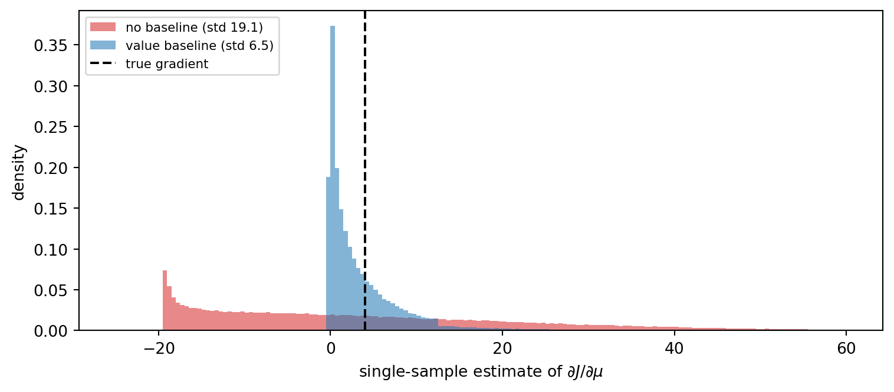
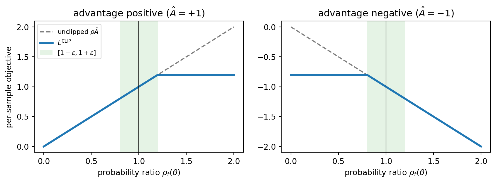
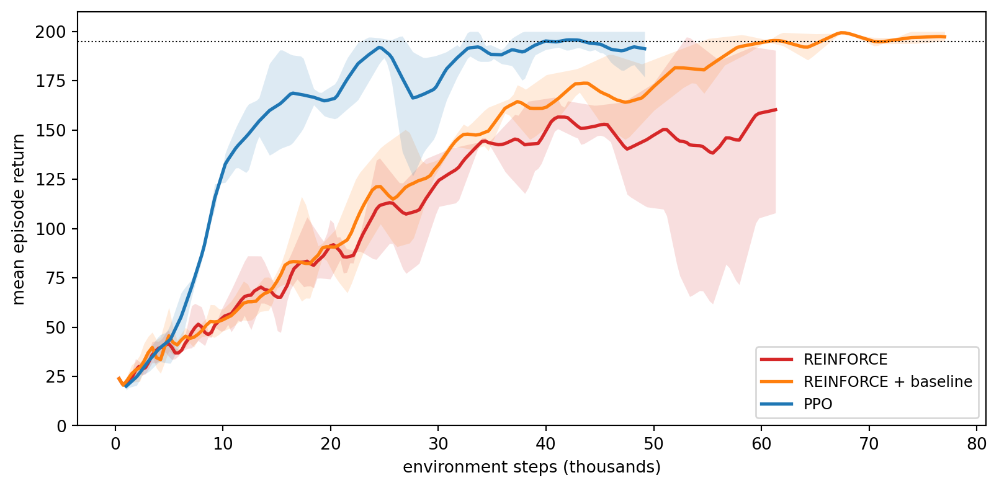

The value-based methods of Chapter 256 learn how good each action is and then act greedily with respect to that estimate. The policy is a by-product, an \(\arg\max\) over a learned table or network. That design works well when actions are few and discrete. It breaks down when the action is a vector of joint torques, a continuous price, or a dosage, because the \(\arg\max\) becomes an inner optimization problem at every step. It also struggles when the best behavior is genuinely random, as in games where any deterministic strategy can be exploited, or in partially observed problems where two states look identical but need different actions.
Policy gradient methods take the other route. They write the policy down as a parameterized distribution \(\pi_\theta(a \mid s)\) and climb the gradient of expected return with respect to \(\theta\) directly. The learned object is exactly the thing we deploy. This chapter derives the policy gradient theorem, builds the classic REINFORCE estimator, and then follows the long line of variance-reduction and stability ideas that turned it into the actor-critic family used across robotics, games, and the reinforcement-learning stage of large language model training. We implement REINFORCE with a learned baseline and Proximal Policy Optimization (PPO) from scratch on a CartPole simulator written in NumPy, compare their learning curves, and close with the deterministic and maximum-entropy actor-critics (DDPG, TD3, SAC) that dominate off-policy continuous control.
The notation follows Chapter 255. A Markov decision process has states \(s\), actions \(a\), transition kernel \(P(s' \mid s, a)\), reward \(r(s, a)\), initial distribution \(\rho_0\), and discount \(\gamma \in [0, 1)\). The value functions of a policy are \(V^\pi(s) = \mathbb{E}_\pi[\sum_{t \ge 0} \gamma^t r_t \mid s_0 = s]\) and \(Q^\pi(s, a) = \mathbb{E}_\pi[\sum_{t \ge 0} \gamma^t r_t \mid s_0 = s, a_0 = a]\).
257.1 Why Optimize the Policy Directly
Three properties make direct policy search attractive.
Continuous and high-dimensional actions. A Gaussian policy \(\pi_\theta(a \mid s) = \mathcal{N}(a \mid \mu_\theta(s), \Sigma_\theta(s))\) handles a 30-dimensional action as easily as a scalar one. Sampling is a single forward pass and there is no maximization over actions.
Stochastic optimal policies. In rock-paper-scissors the only unexploitable strategy is uniform randomization. In aliased partially observed environments, a stochastic policy can strictly beat every deterministic one. A greedy \(\arg\max\) policy can never represent these solutions, while a softmax or Gaussian policy represents them natively.
Smooth improvement. A small change in \(\theta\) produces a small change in the action distribution. In value-based control, a small change in a \(Q\) estimate can flip the \(\arg\max\) and change behavior abruptly, which is one root of the instability of approximate Q-learning. Policy gradient methods inherit the convergence guarantees of stochastic gradient ascent to a local optimum, even with nonlinear function approximation (Sutton et al. 2000, reference 2).
The price is variance. The gradient has to be estimated from sampled trajectories, and naive estimators are so noisy that most of this chapter is about taming them.
257.2 The Policy Gradient Theorem
257.2.1 The log-derivative trick
Let a trajectory be \(\tau = (s_0, a_0, r_0, s_1, a_1, r_1, \dots)\) with discounted return \(R(\tau) = \sum_t \gamma^t r_t\). The objective is \[
J(\theta) = \mathbb{E}_{\tau \sim p_\theta}\big[R(\tau)\big],
\qquad
p_\theta(\tau) = \rho_0(s_0) \prod_{t \ge 0} \pi_\theta(a_t \mid s_t)\, P(s_{t+1} \mid s_t, a_t).
\] The difficulty is that \(\theta\) appears in the sampling distribution, not inside the integrand. The identity \(\nabla_\theta p_\theta = p_\theta \nabla_\theta \log p_\theta\) moves the gradient inside the expectation: \[
\nabla_\theta J(\theta)
= \int R(\tau)\, \nabla_\theta p_\theta(\tau)\, d\tau
= \mathbb{E}_{\tau \sim p_\theta}\big[R(\tau)\, \nabla_\theta \log p_\theta(\tau)\big].
\] Taking the log of the trajectory density turns the product into a sum. The initial distribution and the transition kernel do not depend on \(\theta\), so their gradients vanish: \[
\nabla_\theta \log p_\theta(\tau) = \sum_{t \ge 0} \nabla_\theta \log \pi_\theta(a_t \mid s_t).
\] This is the remarkable part. The gradient of expected return requires no model of the dynamics. We only need to sample trajectories and differentiate the log-probability of the actions we took. The vector \(\nabla_\theta \log \pi_\theta(a \mid s)\) is called the score function, and estimators built from it are score-function or likelihood-ratio estimators. The same estimator appears in variational inference and in the bandit gradient methods of Chapter 253.
257.2.2 Causality and reward-to-go
The trajectory form multiplies every score term by the full return, including rewards collected before the action was taken. Those earlier rewards cannot depend on the later action. Formally, for \(t' < t\), \[
\mathbb{E}\big[r_{t'}\, \nabla_\theta \log \pi_\theta(a_t \mid s_t)\big]
= \mathbb{E}\Big[r_{t'}\, \mathbb{E}_{a_t \sim \pi_\theta(\cdot \mid s_t)}\big[\nabla_\theta \log \pi_\theta(a_t \mid s_t)\big]\Big] = 0,
\] because the expected score is zero: \(\sum_a \pi_\theta(a \mid s) \nabla_\theta \log \pi_\theta(a \mid s) = \nabla_\theta \sum_a \pi_\theta(a \mid s) = \nabla_\theta 1 = 0\). Dropping those zero-mean terms leaves an unbiased estimator with lower variance, \[
\nabla_\theta J(\theta) = \mathbb{E}\Big[\sum_{t \ge 0} \gamma^t\, G_t\, \nabla_\theta \log \pi_\theta(a_t \mid s_t)\Big],
\qquad
G_t = \sum_{k \ge t} \gamma^{k - t} r_k ,
\] where \(G_t\) is the reward-to-go from time \(t\).
257.2.3 The state-visitation form
Sutton et al. (2000, reference 2) stated the result in a form that does not mention trajectories at all. Define the discounted state-visitation measure \(d^\pi(s) = \sum_{t \ge 0} \gamma^t \Pr(s_t = s \mid \pi)\). Then \[
\boxed{\,
\nabla_\theta J(\theta)
= \sum_s d^{\pi_\theta}(s) \sum_a \nabla_\theta \pi_\theta(a \mid s)\, Q^{\pi_\theta}(s, a)
= \mathbb{E}_{s \sim d^{\pi_\theta},\, a \sim \pi_\theta}\big[Q^{\pi_\theta}(s, a)\, \nabla_\theta \log \pi_\theta(a \mid s)\big].
\,}
\] The derivation is a short recursion. Write \(V(s) = \sum_a \pi_\theta(a \mid s) Q(s, a)\) and \(Q(s, a) = r(s, a) + \gamma \sum_{s'} P(s' \mid s, a) V(s')\). Differentiating with the product rule gives \[
\nabla V(s) = \sum_a \nabla \pi_\theta(a \mid s)\, Q(s, a) + \gamma \sum_a \pi_\theta(a \mid s) \sum_{s'} P(s' \mid s, a)\, \nabla V(s').
\] The second term has the same form as the left side, one step later. Unrolling the recursion indefinitely gives \(\nabla V(s_0) = \sum_x \sum_{k \ge 0} \gamma^k \Pr(s_0 \to x \text{ in } k \text{ steps})\sum_a \nabla \pi_\theta(a \mid x) Q(x, a)\), and averaging over \(s_0 \sim \rho_0\) produces \(d^\pi\). The crucial feature is that no derivative of \(d^\pi\) appears, even though changing \(\theta\) changes which states are visited. The theorem is what makes it possible to estimate the gradient from on-policy samples alone.
Strictly, \(d^\pi\) carries the factor \(\gamma^t\), so late states count less. Sutton and Barto’s REINFORCE keeps this factor (Sutton and Barto 2018, reference 13), while almost every deep RL implementation drops it and averages over visited states uniformly. The resulting update is not exactly the gradient of \(J\), but it is the convention used everywhere in practice, including in the code below.
257.3 REINFORCE
Replacing \(Q^\pi(s_t, a_t)\) with its single-sample Monte Carlo estimate \(G_t\) gives REINFORCE (Williams 1992, reference 1). Collect \(N\) episodes with the current policy and ascend \[
\hat{g} = \frac{1}{N} \sum_{i=1}^{N} \sum_{t=0}^{T_i - 1} G_t^{(i)}\, \nabla_\theta \log \pi_\theta\big(a_t^{(i)} \mid s_t^{(i)}\big).
\] In an automatic differentiation framework, this is implemented as a surrogate loss whose gradient equals \(-\hat{g}\), namely \(\mathcal{L}(\theta) = -\frac{1}{N}\sum_{i,t} G_t^{(i)} \log \pi_\theta(a_t^{(i)} \mid s_t^{(i)})\) with \(G_t\) treated as a constant. The surrogate itself has no meaning as a loss value. Only its gradient does, a point that confuses many first implementations that try to monitor it.
REINFORCE is unbiased and simple, and it is painfully slow. The return \(G_t\) sums many random rewards, and its magnitude multiplies the score. If every return is positive, the estimator pushes up the probability of every action it sampled, and learns only from the differences in how hard it pushed. That is the problem baselines solve.
257.4 Baselines and Variance Reduction
For any function \(b(s)\) that does not depend on the action, the zero-mean property of the score gives \[
\mathbb{E}_{a \sim \pi_\theta}\big[b(s)\, \nabla_\theta \log \pi_\theta(a \mid s)\big] = b(s) \cdot 0 = 0 .
\] Subtracting a baseline therefore leaves the gradient unbiased while changing its variance: \[
\nabla_\theta J(\theta) = \mathbb{E}\Big[\sum_t \big(G_t - b(s_t)\big)\, \nabla_\theta \log \pi_\theta(a_t \mid s_t)\Big].
\] The baseline is a control variate in the Monte Carlo sense. The natural choice is the state value \(b(s) = V^\pi(s)\), which turns the weight into “how much better than usual was this outcome”. Greensmith et al. (2004, reference 14) derive the variance-optimal baseline, which for a single parameter is \(b^\star = \mathbb{E}[g^2 G] / \mathbb{E}[g^2]\) with \(g\) the score, a score-weighted average of returns. The ordinary value function is usually close to optimal and far easier to learn.
The cell below makes the effect concrete on the simplest possible continuous-action problem. A one-step Gaussian policy \(a \sim \mathcal{N}(\mu, \sigma^2)\) earns reward \(r(a) = c - (a - 2)^2\), whose expected-reward gradient with respect to \(\mu\) is \(-2(\mu - 2)\) for every offset \(c\). The score is \(\nabla_\mu \log \pi = (a - \mu)/\sigma^2\). Adding the constant \(c\) cannot change the true gradient, but it changes the variance of the no-baseline estimator dramatically.
Code
import timeimport numpy as npimport matplotlib.pyplot as pltT_START = time.perf_counter()rng = np.random.default_rng(0)mu, sigma, n_draws =0.0, 1.0, 200_000true_grad =-2.0* (mu -2.0) # gradient of E[r] w.r.t. mu, any offset cdef estimates(c, baseline):"""Single-sample REINFORCE estimates of dJ/dmu for reward c - (a - 2)^2.""" a = rng.normal(mu, sigma, n_draws) r = c - (a -2.0) **2 score = (a - mu) / sigma**2if baseline =="none": b =0.0elif baseline =="mean": b = r.mean() # value baseline V = E[r]else: # variance-optimal constant baseline b = np.mean(score**2* r) / np.mean(score**2)return (r - b) * scoreprint(f"true gradient = {true_grad:.2f}")print(f"{'offset c':>9}{'baseline':>9}{'mean':>8}{'std':>8}")for c in [5.0, 25.0, 100.0]:for b in ["none", "mean", "optimal"]: g = estimates(c, b)print(f"{c:9.0f}{b:>9}{g.mean():8.3f}{g.std():8.3f}")g_none, g_base = estimates(25.0, "none"), estimates(25.0, "mean")fig, ax = plt.subplots(figsize=(8, 3.6))bins = np.linspace(-25, 60, 171)ax.hist(g_none, bins=bins, density=True, alpha=0.55, color="tab:red", label=f"no baseline (std {g_none.std():.1f})")ax.hist(g_base, bins=bins, density=True, alpha=0.55, color="tab:blue", label=f"value baseline (std {g_base.std():.1f})")ax.axvline(true_grad, color="black", lw=1.5, ls="--", label="true gradient")ax.set_xlabel(r"single-sample estimate of $\partial J / \partial \mu$")ax.set_ylabel("density")ax.legend(fontsize=8, loc="upper left")fig.tight_layout()plt.show()
true gradient = 4.00
offset c baseline mean std
5 none 4.013 6.533
5 mean 4.018 6.502
5 optimal 4.000 6.192
25 none 3.984 18.990
25 mean 4.008 6.500
25 optimal 3.967 6.115
100 none 3.746 92.914
100 mean 3.994 6.488
100 optimal 4.002 6.135

Figure 257.1: Single-sample score-function estimates of the policy gradient for a Gaussian policy on a quadratic reward with offset c = 25. Both estimators are centered on the true gradient, but subtracting a baseline concentrates them tightly around it.
Every row has a mean close to the true gradient, confirming that the baseline never introduces bias. With \(c = 5\) the expected reward is already zero, so the no-baseline estimator is nearly as good as the others. As the offset grows, the standard deviation without a baseline grows with it, so a reward that happens to be measured on a large positive scale is far harder to learn from than the same reward centered at zero. With a baseline the variance is invariant to the offset, and the variance-optimal constant buys a further small improvement over the plain mean. In sequential problems the gain is larger still, because the baseline can depend on the state.
257.5 Advantage Functions and Generalized Advantage Estimation
With \(b(s) = V^\pi(s)\), the weight \(Q^\pi(s, a) - V^\pi(s)\) is the advantage\(A^\pi(s, a)\). It measures how much better action \(a\) is than the policy’s average action in state \(s\), and it is zero on average under the policy. The policy gradient becomes \(\mathbb{E}[A^\pi(s, a)\, \nabla_\theta \log \pi_\theta(a \mid s)]\).
We never know \(A^\pi\), so we estimate it, and every estimator trades bias against variance. With a learned critic \(V_\phi\), the one-step temporal-difference error\[
\delta_t = r_t + \gamma V_\phi(s_{t+1}) - V_\phi(s_t)
\] is an unbiased estimate of \(A^\pi(s_t, a_t)\) if \(V_\phi = V^\pi\), and has low variance because it involves a single random reward. When the critic is wrong, it is biased. The Monte Carlo advantage \(G_t - V_\phi(s_t)\) is unbiased whatever the critic, but its variance accumulates over the whole remaining episode. The \(k\)-step estimators \(\hat{A}_t^{(k)} = \sum_{l=0}^{k-1} \gamma^l \delta_{t+l}\) interpolate between the two, exactly as the \(n\)-step returns of Chapter 256 do for value learning.
Generalized Advantage Estimation (GAE) takes an exponentially weighted average of all \(k\)-step estimators (Schulman et al. 2016, reference 5). The weights telescope into a compact sum of TD errors: \[
\hat{A}_t^{\text{GAE}(\gamma, \lambda)}
= (1 - \lambda) \sum_{k \ge 1} \lambda^{k-1} \hat{A}_t^{(k)}
= \sum_{l \ge 0} (\gamma \lambda)^l\, \delta_{t+l} .
\] Setting \(\lambda = 0\) recovers the one-step TD error and setting \(\lambda = 1\) recovers the Monte Carlo advantage. Intermediate values, typically \(\lambda \in [0.9, 0.97]\), give most of the variance reduction of bootstrapping at a modest bias. The sum is computed in a single backward pass with the recursion \(\hat{A}_t = \delta_t + \gamma \lambda (1 - d_t) \hat{A}_{t+1}\), where \(d_t\) marks the end of an episode. GAE is the same mathematics as the TD(\(\lambda\)) eligibility traces of value learning, applied to advantages.
257.6 Actor-Critic Methods
An actor-critic method maintains two function approximators. The actor \(\pi_\theta\) is the policy. The critic \(V_\phi\) (or \(Q_\phi\)) estimates values and supplies the advantage signal. The idea predates deep learning by decades. The pole-balancing system of Barto et al. (1983, reference 12) already paired an “associative search element” with an “adaptive critic element”, and Konda and Tsitsiklis (2000, reference 15) proved convergence of two-timescale actor-critic algorithms with linear critics.
A generic synchronous update, usually called A2C (advantage actor-critic), runs \(M\) environments in parallel for \(T\) steps, computes advantages with GAE, and takes one gradient step on \[
\mathcal{L}(\theta, \phi) =
-\frac{1}{MT}\sum_{t} \hat{A}_t \log \pi_\theta(a_t \mid s_t)
+ c_v \frac{1}{MT}\sum_t \big(V_\phi(s_t) - \hat{R}_t\big)^2
- c_H \frac{1}{MT}\sum_t \mathcal{H}\big[\pi_\theta(\cdot \mid s_t)\big],
\] where \(\hat{R}_t = \hat{A}_t + V_\phi(s_t)\) is the critic’s regression target and \(\mathcal{H}\) is the policy entropy. A3C (Mnih et al. 2016, reference 6) is the asynchronous original: many CPU workers each compute gradients on their own environment copy and apply them to shared parameters without locks. The parallel workers decorrelate the data in the way a replay buffer does for DQN, which is what made on-policy deep RL stable. In practice the synchronous version is as good and simpler to reason about, which is why A2C replaced A3C in most code bases.
257.7 Natural Policy Gradient and TRPO
The plain gradient depends on how the policy is parameterized. A step of size \(\alpha\) in \(\theta\) can barely move one policy and completely change another, and a single bad step can collapse performance in a way the agent then has no data to recover from. The fix is to measure step size in the space of distributions rather than parameters.
The natural policy gradient (Kakade 2001, reference 3) preconditions the gradient with the inverse Fisher information matrix of the policy: \[
F(\theta) = \mathbb{E}_{s \sim d^\pi,\, a \sim \pi_\theta}\big[\nabla_\theta \log \pi_\theta(a \mid s)\, \nabla_\theta \log \pi_\theta(a \mid s)^\top\big],
\qquad
\theta \leftarrow \theta + \alpha\, F(\theta)^{-1} \nabla_\theta J(\theta).
\] Because \(F\) is the local curvature of the KL divergence, \(\mathrm{KL}(\pi_\theta \,\|\, \pi_{\theta + \Delta}) \approx \tfrac{1}{2}\Delta^\top F \Delta\), the natural gradient is the steepest ascent direction under a KL trust region and is invariant to reparameterization. Peters and Schaal (2008, reference 16) combined it with a critic in the natural actor-critic.
Trust Region Policy Optimization (TRPO) turns this into a practical algorithm with a guarantee (Schulman et al. 2015, reference 4). The starting point is an exact identity relating two policies, \(J(\pi') = J(\pi) + \mathbb{E}_{s \sim d^{\pi'},\, a \sim \pi'}[A^\pi(s, a)]\). The state distribution of the new policy is unknown, so TRPO replaces it with the old one and corrects the action distribution by importance sampling, which gives the surrogate objective\[
L_{\pi_{\text{old}}}(\theta) = \mathbb{E}_{s \sim d^{\pi_{\text{old}}},\, a \sim \pi_{\text{old}}}\left[\frac{\pi_\theta(a \mid s)}{\pi_{\text{old}}(a \mid s)}\, A^{\pi_{\text{old}}}(s, a)\right].
\] The surrogate matches \(J\) to first order at \(\theta_{\text{old}}\), and the error from using the stale state distribution is bounded by the divergence between the policies. Schulman and colleagues show \(J(\pi') \ge L_\pi(\pi') - C \max_s \mathrm{KL}(\pi \,\|\, \pi')\) with \(C = 4 \epsilon \gamma / (1 - \gamma)^2\) and \(\epsilon = \max_{s,a} |A^\pi(s, a)|\), so maximizing the right side guarantees monotonic improvement. The theoretical penalty coefficient gives tiny steps, so TRPO uses a hard constraint on the average KL instead: \[
\max_\theta\ L_{\pi_{\text{old}}}(\theta)
\quad \text{subject to} \quad
\mathbb{E}_{s}\big[\mathrm{KL}\big(\pi_{\text{old}}(\cdot \mid s) \,\|\, \pi_\theta(\cdot \mid s)\big)\big] \le \delta .
\] It solves a linear-quadratic approximation of this problem, which is a natural gradient step, using conjugate gradient with Fisher-vector products so the Fisher matrix is never formed, then backtracks along the step until the true KL and surrogate improvement are acceptable. TRPO is reliable and well grounded, but the conjugate gradient machinery is awkward to combine with shared actor-critic networks, dropout, or large minibatch pipelines.
257.8 Proximal Policy Optimization
PPO keeps the trust-region idea and discards the second-order machinery. It was introduced in a 2017 OpenAI technical report by Schulman and colleagues, and its behavior has since been dissected in peer-reviewed studies (Engstrom et al. 2020, reference 10, and Andrychowicz et al. 2021, reference 11). Write the probability ratio \(\rho_t(\theta) = \pi_\theta(a_t \mid s_t) / \pi_{\theta_{\text{old}}}(a_t \mid s_t)\). PPO maximizes the clipped surrogate\[
L^{\text{CLIP}}(\theta) = \mathbb{E}_t\Big[\min\big(\rho_t(\theta)\, \hat{A}_t,\ \operatorname{clip}\big(\rho_t(\theta), 1 - \epsilon, 1 + \epsilon\big)\, \hat{A}_t\big)\Big].
\] The minimum makes the objective a pessimistic lower bound on the unclipped surrogate. When the advantage is positive, the objective stops rewarding increases in \(\rho_t\) beyond \(1 + \epsilon\). When it is negative, it stops rewarding decreases below \(1 - \epsilon\). In both cases the gradient through that sample becomes exactly zero once the policy has moved far enough in the profitable direction, while moves in the unprofitable direction are still fully penalized. That asymmetry is easiest to see in a picture.
Code
eps =0.2ratio = np.linspace(0.0, 2.0, 401)fig, axes = plt.subplots(1, 2, figsize=(9, 3.4), sharey=False)for ax, A inzip(axes, [1.0, -1.0]): unclipped = ratio * A clipped = np.minimum(ratio * A, np.clip(ratio, 1- eps, 1+ eps) * A) ax.plot(ratio, unclipped, ls="--", color="tab:gray", label=r"unclipped $\rho \hat A$") ax.plot(ratio, clipped, lw=2.5, color="tab:blue", label=r"$L^{\mathrm{CLIP}}$") ax.axvspan(1- eps, 1+ eps, color="tab:green", alpha=0.12, lw=0, label=r"$[1-\epsilon, 1+\epsilon]$") ax.axvline(1.0, color="black", lw=0.8) ax.set_title(f"advantage {'positive'if A >0else'negative'} ($\\hat A = {A:+.0f}$)") ax.set_xlabel(r"probability ratio $\rho_t(\theta)$")axes[0].set_ylabel("per-sample objective")axes[0].legend(fontsize=8, loc="upper left")fig.tight_layout()plt.show()

Figure 257.2: The PPO clipped surrogate for a single sample as a function of the probability ratio, for a positive and a negative advantage with clip range 0.2. The flat regions carry zero gradient, so a sample stops pushing the policy once it has moved far enough in the direction its advantage favors.
Because the clipped objective is safe to optimize repeatedly, PPO reuses each batch of on-policy data for several epochs of minibatch stochastic gradient ascent. That data reuse is where its sample-efficiency gain over A2C comes from. A2C is exactly PPO with one epoch, one minibatch, and no clipping.
257.8.1 Practical details that matter
PPO’s published description is short, and its performance depends heavily on details that live in code. Engstrom et al. (2020, reference 10) showed that a set of “code-level optimizations” in the reference implementation, including value-function clipping, reward scaling, orthogonal initialization, learning-rate annealing, observation normalization, tanh activations, and global gradient clipping, account for most of PPO’s measured advantage over TRPO. Without them, the clipping alone did not keep the probability ratios inside the trust region. Andrychowicz et al. (2021, reference 11) trained more than 250,000 agents across over 50 implementation choices and distilled the results into recommendations. The ones that carry over to most problems are the following.
Normalize observations with running statistics. This was among the most consistently important choices.
Normalize advantages within each minibatch to zero mean and unit variance. It rarely hurts and makes the learning rate less sensitive to the reward scale.
Use separate actor and critic networks, with a wide critic. Shared trunks couple the two losses and force a tuned value coefficient.
Initialize the last policy layer with small weights so the initial action distribution is nearly independent of the state and, for Gaussian policies, has a modest standard deviation. This was the study’s most surprising finding.
Use GAE with \(\lambda\) around 0.9 and a clip range around 0.2 to 0.3. Treat \(\gamma\) as a real hyperparameter, not a constant.
Use Adam with a tuned learning rate, with linear decay as an optional small improvement, and clip the global gradient norm.
Handle time limits correctly. An episode cut off by a time limit has not terminated, so the advantage should bootstrap from the value of the final state rather than treat it as zero. Treating truncation as termination teaches the critic that the world ends on a clock.
Two diagnostics are worth logging on every update: the approximate KL divergence between the old and new policy, and the clip fraction, the share of samples whose ratio left the clip range. A KL that climbs steadily or a clip fraction above a few tenths means the learning rate or the number of epochs is too high for the trust region to hold.
257.9 A Self-Contained Testbed: CartPole in NumPy
Gymnasium is not part of this book’s environment, and the algorithms need nothing from it, so we write the classic CartPole task directly. A pole is hinged to a cart on a frictionless track. The agent pushes the cart left or right with a fixed force, earns a reward of one per step while the pole stays within 12 degrees of upright and the cart within 2.4 units of center, and is cut off after 200 steps. The equations of motion are those of Barto et al. (1983, reference 12), with the constants used by the widely used Gym implementation, integrated with an explicit Euler step. The environment is vectorized so a batch of independent carts advances in one NumPy call, and it reports termination and time-limit truncation separately.
Code
import torchimport torch.nn as nnfrom torch.distributions import Categoricaltorch.set_num_threads(1) # tiny networks run fastest single-threadedtorch.distributions.Distribution.set_default_validate_args(False)class CartPole:"""Vectorized CartPole: Barto, Sutton and Anderson (1983) dynamics, Euler step.""" g, m_cart, m_pole, half_len, force_mag, tau =9.8, 1.0, 0.1, 0.5, 10.0, 0.02 theta_lim, x_lim =12*2* np.pi /360, 2.4def__init__(self, n, max_steps=200, seed=0):self.n, self.max_steps = n, max_stepsself.rng = np.random.default_rng(seed)self.s, self.t = np.zeros((n, 4)), np.zeros(n, dtype=int)def _fresh(self, k):returnself.rng.uniform(-0.05, 0.05, size=(k, 4))def reset(self):self.s, self.t[:] =self._fresh(self.n), 0returnself.s.copy()def _dynamics(self, s, a): x, x_dot, th, th_dot = s.T force = np.where(a ==1, self.force_mag, -self.force_mag) cos, sin = np.cos(th), np.sin(th) m_tot, pml =self.m_cart +self.m_pole, self.m_pole *self.half_len temp = (force + pml * th_dot**2* sin) / m_tot th_acc = (self.g * sin - cos * temp) / (self.half_len * (4.0/3.0-self.m_pole * cos**2/ m_tot)) x_acc = temp - pml * th_acc * cos / m_totreturn np.stack([x +self.tau * x_dot, x_dot +self.tau * x_acc, th +self.tau * th_dot, th_dot +self.tau * th_acc], axis=1)def step(self, a):"""Advance every cart. Returns obs (auto-reset), reward, terminated, truncated, and the pre-reset final observation for bootstrapping."""self.s =self._dynamics(self.s, a)self.t +=1 final =self.s.copy() term = (np.abs(self.s[:, 0]) >self.x_lim) | (np.abs(self.s[:, 2]) >self.theta_lim) trunc = (self.t >=self.max_steps) &~term done = term | truncif done.any():self.s[done], self.t[done] =self._fresh(done.sum()), 0returnself.s.copy(), np.ones(self.n), term, trunc, finaldef mlp(n_in, n_out, hidden=32):return nn.Sequential(nn.Linear(n_in, hidden), nn.Tanh(), nn.Linear(hidden, hidden), nn.Tanh(), nn.Linear(hidden, n_out))def numpy_net(net):"""Snapshot a torch MLP as a NumPy function. Rollouts only need forward passes, and NumPy is several times faster than torch for batches this small.""" layers = [(m.weight.detach().numpy().T.copy(), m.bias.detach().numpy().copy())for m in net ifisinstance(m, nn.Linear)]def forward(x):for i, (W, b) inenumerate(layers): x = x @ W + bif i <len(layers) -1: x = np.tanh(x)return xreturn forwarddef sample_actions(logits, rng):"""Sample from a two-action softmax policy. Returns actions and log-probs.""" z = logits - logits.max(axis=1, keepdims=True) logp = z - np.log(np.exp(z).sum(axis=1, keepdims=True)) a = (rng.random(len(z)) < np.exp(logp[:, 1])).astype(int)return a, logp[np.arange(len(a)), a]env = CartPole(n=3, seed=0)obs = env.reset()print("initial observations [x, x_dot, theta, theta_dot]:\n", obs.round(3))
Each REINFORCE iteration rolls out a batch of complete episodes with the current policy, computes reward-to-go, and takes one gradient step. The baseline variant also fits a value network \(V_\phi(s)\) to the returns by least squares and uses \(G_t - V_\phi(s_t)\) as the weight. Everything else is identical, so the comparison isolates the baseline.
Code
GAMMA =0.99def reinforce(seed, baseline, iters=50, n_episodes=16, lr=3e-3): torch.manual_seed(seed) env = CartPole(n_episodes, seed=seed) pi, v = mlp(4, 2), mlp(4, 1) opt_pi = torch.optim.Adam(pi.parameters(), lr=lr) opt_v = torch.optim.Adam(v.parameters(), lr=1e-2) steps, curve =0, []for _ inrange(iters): obs, alive, policy = env.reset(), np.ones(n_episodes, bool), numpy_net(pi) O, A, R, M = [], [], [], []for _ inrange(env.max_steps): # roll out until every episode ends a, _ = sample_actions(policy(obs), env.rng) O.append(obs), A.append(a), M.append(alive.copy()) obs, r, term, _, _ = env.step(a) R.append(r * alive) alive = alive &~termifnot alive.any():break R = np.array(R) G, running = np.zeros_like(R), np.zeros(n_episodes)for t inreversed(range(len(R))): # reward-to-go G_t running = R[t] + GAMMA * running G[t] = running O = torch.as_tensor(np.array(O), dtype=torch.float32) A = torch.as_tensor(np.array(A)) M = torch.as_tensor(np.array(M), dtype=torch.float32) G = torch.as_tensor(G, dtype=torch.float32) steps +=int(M.sum()) curve.append((steps, R.sum(axis=0).mean())) logp = Categorical(logits=pi(O)).log_prob(A)if baseline: values = v(O).squeeze(-1) weight = G - values.detach() # advantage estimate G_t - V(s_t) v_loss = ((values - G) **2* M).sum() / M.sum() opt_v.zero_grad() v_loss.backward() opt_v.step()else: weight = G pi_loss =-(logp * weight * M).sum() / n_episodes # surrogate, not a loss value opt_pi.zero_grad() pi_loss.backward() opt_pi.step()return np.array(curve)SEEDS = [0, 1, 2]t0 = time.perf_counter()runs_rf = {name: [reinforce(s, baseline=bl) for s in SEEDS]for name, bl in [("REINFORCE", False), ("REINFORCE + baseline", True)]}print(f"REINFORCE runs finished in {time.perf_counter() - t0:.1f} s")for name, runs in runs_rf.items(): last = [c[-10:, 1].mean() for c in runs]print(f"{name:22s} mean return over last 10 iterations, per seed: "+", ".join(f"{x:6.1f}"for x in last))
REINFORCE runs finished in 13.5 s
REINFORCE mean return over last 10 iterations, per seed: 196.1, 164.8, 86.0
REINFORCE + baseline mean return over last 10 iterations, per seed: 195.1, 194.1, 191.8
257.11 Generalized Advantage Estimation in Code
GAE is a backward pass over TD errors. The cell implements it and checks the two limiting cases derived above: \(\lambda = 0\) must reproduce the one-step TD errors and \(\lambda = 1\) must reproduce the Monte Carlo return minus the value, bootstrapped from the last state.
The PPO implementation follows the recommendations above: separate actor and critic, GAE, per-minibatch advantage normalization, several epochs over each batch with shuffled minibatches, an entropy bonus, global gradient clipping, a linearly decayed learning rate, and correct handling of time-limit truncation. The truncation fix adds \(\gamma V_\phi(s_{\text{final}})\) to the reward of a truncated step, then lets GAE treat the step as terminal, which is equivalent to bootstrapping through the cut. Each update also records the approximate KL divergence, estimated as the mean of \((\rho - 1) - \log \rho\), and the clip fraction.
Code
def ppo(seed, total_steps=50_000, n_envs=8, horizon=128, epochs=4, minibatch=512, clip=0.2, lr=5e-3, ent_coef=0.01, vf_coef=0.5, lam=0.95, max_grad_norm=0.5): torch.manual_seed(seed) env = CartPole(n_envs, seed=seed) pi, v = mlp(4, 2), mlp(4, 1) params =list(pi.parameters()) +list(v.parameters()) opt = torch.optim.Adam(params, lr=lr, eps=1e-5) gen = torch.Generator().manual_seed(seed) obs, ep_return, finished = env.reset(), np.zeros(n_envs), [] steps, curve, diagnostics =0, [], [] n_updates = total_steps // (n_envs * horizon)for update inrange(n_updates):for group in opt.param_groups: # linear LR decay group["lr"] = lr * (1.0- update / n_updates) policy, value = numpy_net(pi), numpy_net(v) O = np.zeros((horizon, n_envs, 4)) A = np.zeros((horizon, n_envs), dtype=int) LP, R, D, V = (np.zeros((horizon, n_envs)) for _ inrange(4))for t inrange(horizon): # collect a rollout a, lp = sample_actions(policy(obs), env.rng) O[t], A[t], LP[t], V[t] = obs, a, lp, value(obs)[:, 0] obs, r, term, trunc, final = env.step(a) R[t] = rif trunc.any(): # bootstrap through time limits R[t] += GAMMA * value(final)[:, 0] * trunc D[t] = term | trunc ep_return += rfor i in np.flatnonzero(term | trunc): finished.append(ep_return[i]) ep_return[i] =0.0 next_V = np.vstack([V[1:], value(obs)[None, :, 0]]) ADV = gae(R, V, next_V, D, lam=lam) RET = ADV + V # critic regression target steps += n_envs * horizon curve.append((steps, np.mean(finished[-20:]) if finished else0.0)) to_t =lambda x: torch.as_tensor(x.reshape(-1), dtype=torch.float32) bO = torch.as_tensor(O.reshape(-1, 4), dtype=torch.float32) bA = torch.as_tensor(A.reshape(-1)) bLP, bADV, bRET = to_t(LP), to_t(ADV), to_t(RET) kls, clip_fracs = [], []for _ inrange(epochs): perm = torch.randperm(len(bA), generator=gen)for start inrange(0, len(bA), minibatch): idx = perm[start:start + minibatch] dist = Categorical(logits=pi(bO[idx])) log_ratio = dist.log_prob(bA[idx]) - bLP[idx] ratio = log_ratio.exp() adv = bADV[idx] adv = (adv - adv.mean()) / (adv.std() +1e-8) surrogate = torch.min(ratio * adv, torch.clamp(ratio, 1- clip, 1+ clip) * adv) v_loss = ((v(bO[idx]).squeeze(-1) - bRET[idx]) **2).mean() loss =-surrogate.mean() + vf_coef * v_loss - ent_coef * dist.entropy().mean() opt.zero_grad() loss.backward() nn.utils.clip_grad_norm_(params, max_grad_norm) opt.step()with torch.no_grad(): kls.append(((ratio -1) - log_ratio).mean().item()) clip_fracs.append(((ratio -1).abs() > clip).float().mean().item()) diagnostics.append((np.mean(kls), np.mean(clip_fracs)))return np.array(curve), np.array(diagnostics)t0 = time.perf_counter()ppo_out = [ppo(s) for s in SEEDS]runs_ppo = [c for c, _ in ppo_out]diag = np.stack([d for _, d in ppo_out]) # (seed, update, [kl, clip_frac])print(f"PPO runs finished in {time.perf_counter() - t0:.1f} s")print("PPO mean return over last 10 updates, per seed: "+", ".join(f"{c[-10:, 1].mean():6.1f}"for c in runs_ppo))print(f"approx KL per update: median {np.median(diag[..., 0]):.4f}, "f"max {diag[..., 0].max():.4f}")print(f"clip fraction: median {np.median(diag[..., 1]):.3f}, "f"max {diag[..., 1].max():.3f}")
PPO runs finished in 9.3 s
PPO mean return over last 10 updates, per seed: 187.5, 192.6, 200.0
approx KL per update: median 0.0012, max 0.0121
clip fraction: median 0.005, max 0.196
257.13 Comparing the Learning Curves
Plotting return against environment steps, rather than against iterations or wall-clock time, puts all three methods on the same budget of experience. The curves are averaged over seeds with a band spanning the best and worst seed, because a single seed in deep RL is close to an anecdote.
Code
SOLVED =195.0def on_grid(runs, grid):"""Interpolate each seed's (steps, return) curve onto a shared step grid."""return np.stack([np.interp(grid, c[:, 0], c[:, 1]) for c in runs])all_runs = {**runs_rf, "PPO": runs_ppo}colors = {"REINFORCE": "tab:red", "REINFORCE + baseline": "tab:orange", "PPO": "tab:blue"}fig, ax = plt.subplots(figsize=(8.5, 4.2))for name, runs in all_runs.items(): max_common =min(c[-1, 0] for c in runs) grid = np.linspace(min(c[0, 0] for c in runs), max_common, 200) Y = on_grid(runs, grid) ax.plot(grid /1e3, Y.mean(0), lw=2, color=colors[name], label=name) ax.fill_between(grid /1e3, Y.min(0), Y.max(0), color=colors[name], alpha=0.15, lw=0)ax.axhline(SOLVED, color="black", lw=0.8, ls=":")ax.set_xlabel("environment steps (thousands)")ax.set_ylabel("mean episode return")ax.set_ylim(0, 210)ax.legend(loc="lower right", fontsize=9)fig.tight_layout()plt.show()budgets = [20_000, 35_000, 50_000]print("return at a fixed budget of environment steps (mean over seeds / worst seed):")print(f" {'method':22s}"+"".join(f"{b:>16,}"for b in budgets))for name, runs in all_runs.items(): Y = on_grid(runs, np.array(budgets, dtype=float))print(f" {name:22s}"+"".join(f"{m:9.1f} / {w:5.1f}"for m, w inzip(Y.mean(0), Y.min(0))))print(f"chapter compute so far: {time.perf_counter() - T_START:.1f} s")

Figure 257.3: Learning curves on the NumPy CartPole task (maximum return 200, dotted line at 195) as a function of environment steps, averaged over three seeds with a band from the worst to the best seed. Each REINFORCE run stops after a fixed number of batches, so its curves end at different step counts.
return at a fixed budget of environment steps (mean over seeds / worst seed):
method 20,000 35,000 50,000
REINFORCE 91.5 / 74.5 143.2 / 140.1 147.4 / 110.5
REINFORCE + baseline 90.7 / 79.8 152.1 / 143.7 172.1 / 159.9
PPO 165.5 / 156.2 188.4 / 185.7 191.2 / 176.9
chapter compute so far: 28.9 s
The picture matches the theory. Plain REINFORCE makes progress, because CartPole is easy, but its seeds disagree the most and its worst seed lags far behind, which is the variance problem of Figure 257.1 appearing in a sequential setting. Adding the learned baseline changes nothing about the expected gradient, yet at the larger budgets in the fixed-budget table it raises the worst seed as well as the average. Early on, before the critic has learned anything useful, the two variants are indistinguishable. PPO is ahead of both REINFORCE variants at every budget in the table, because every rollout is used for several epochs of updates and GAE gives it a lower-variance advantage than the Monte Carlo returns REINFORCE relies on. The diagnostics printed above show the trust region holding: the approximate KL stays small and only a small fraction of samples hit the clip boundary. If you raise the learning rate or the number of epochs in ppo, both diagnostics climb, and the learning curves become erratic soon after.
Read the comparison as a demonstration of mechanisms rather than a benchmark. Three seeds on one easy task cannot rank algorithms, and the hyperparameters were set once by hand rather than tuned per method. The pitfalls section returns to why that caution matters so much in this field.
257.14 Deterministic Policy Gradients: DDPG and TD3
Everything so far is on-policy: the gradient needs samples from the current policy, so data is thrown away after an update or two. For continuous control where simulation or real interaction is expensive, off-policy actor-critics that learn from a replay buffer are far more sample-efficient.
The deterministic policy gradient theorem (Silver et al. 2014, reference 7) considers a deterministic policy \(a = \mu_\theta(s)\) and shows \[
\nabla_\theta J(\theta) = \mathbb{E}_{s \sim d^{\mu}}\Big[\nabla_\theta \mu_\theta(s)\, \nabla_a Q^{\mu}(s, a)\big|_{a = \mu_\theta(s)}\Big].
\] The actor simply follows the gradient of the critic with respect to the action, a chain rule through \(Q\). There is no integral over actions, so the estimator has much lower variance in high-dimensional action spaces. And because the expectation is only over states, the gradient can be estimated from states stored in a replay buffer collected by any exploratory behavior policy.
DDPG (Lillicrap et al. 2016, reference 8) combines this with the stabilizers of DQN: a replay buffer, target networks updated by Polyak averaging \(\bar\phi \leftarrow \tau \phi + (1 - \tau)\bar\phi\), and additive exploration noise on the actions. The critic regresses on \(y = r + \gamma Q_{\bar\phi}(s', \mu_{\bar\theta}(s'))\) and the actor ascends \(Q_\phi(s, \mu_\theta(s))\). DDPG works, but it is brittle. Its critic overestimates values for the same reason Q-learning does, and the actor actively seeks out and exploits those overestimates.
TD3 (twin delayed DDPG) fixes this with three changes (Fujimoto et al. 2018, reference 9):
Clipped double Q-learning. Learn two critics and use the smaller target, \(y = r + \gamma \min_{j=1,2} Q_{\bar\phi_j}(s', \tilde{a}')\), which counteracts overestimation at the cost of mild underestimation.
Delayed policy updates. Update the actor and the target networks less often than the critics, typically once every two critic steps, so the actor follows a critic whose error has had time to shrink.
Target policy smoothing. Compute the target action as \(\tilde{a}' = \mu_{\bar\theta}(s') + \operatorname{clip}(\varepsilon, -c, c)\) with Gaussian \(\varepsilon\), which regularizes the critic to be smooth around the target action and prevents the actor from exploiting narrow peaks.
257.15 Maximum-Entropy RL and Soft Actor-Critic
257.15.1 Entropy regularization
The A2C and PPO losses above already contain an entropy term \(-c_H \mathcal{H}[\pi_\theta(\cdot \mid s)]\). Its job is to slow the collapse of the policy toward a deterministic one before the critic has learned enough to justify it. This is a regularizer bolted onto the gradient, applied only at visited states. It does not change what the agent considers optimal. In the PPO study cited above, entropy bonuses mattered little once the policy initialization was good, which is a useful reminder that the coefficient \(c_H\) is a tuning knob rather than a principle.
257.15.2 The maximum-entropy objective
Maximum-entropy RL makes entropy part of the objective itself: \[
J_{\text{MaxEnt}}(\pi) = \sum_t \mathbb{E}_{(s_t, a_t) \sim \pi}\Big[r(s_t, a_t) + \alpha\, \mathcal{H}\big[\pi(\cdot \mid s_t)\big]\Big].
\] The agent is rewarded for remaining random wherever randomness is cheap, so it plans to reach states where it will have many good options. The corresponding soft Bellman equations replace the hard maximum with a log-sum-exp, \[
Q(s, a) = r(s, a) + \gamma\, \mathbb{E}_{s'}\big[V(s')\big],
\qquad
V(s) = \mathbb{E}_{a \sim \pi}\big[Q(s, a) - \alpha \log \pi(a \mid s)\big],
\] and the optimal policy is a Boltzmann distribution, \(\pi^\star(a \mid s) \propto \exp(Q^\star(s, a) / \alpha)\). As \(\alpha \to 0\), this recovers the ordinary greedy policy. The same exponentiated-value form reappears in the KL-regularized RLHF objective of Chapter 270, where the reference policy plays the role of the uniform prior that entropy implicitly measures against. Haarnoja et al. (2017, reference 17) first scaled this framework to deep networks with soft Q-learning.
Soft Actor-Critic (SAC) is the practical off-policy algorithm (Haarnoja et al. 2018, reference 18). It keeps two critics with clipped double-Q targets as in TD3, now using the soft target \(y = r + \gamma\big(\min_j Q_{\bar\phi_j}(s', a') - \alpha \log \pi_\theta(a' \mid s')\big)\) with \(a' \sim \pi_\theta(\cdot \mid s')\). The actor is a squashed Gaussian, \(a = \tanh(\mu_\theta(s) + \sigma_\theta(s) \odot \varepsilon)\), and it minimizes the KL divergence to the Boltzmann policy of the current critic, \[
\mathcal{L}_\pi(\theta) = \mathbb{E}_{s \sim \mathcal{D},\, \varepsilon \sim \mathcal{N}(0, I)}\Big[\alpha \log \pi_\theta(a_\theta(s, \varepsilon) \mid s) - \min_j Q_{\phi_j}\big(s, a_\theta(s, \varepsilon)\big)\Big].
\] Because the action is a differentiable function of the noise, the gradient flows through the critic by the reparameterization trick, which has far lower variance than the score-function estimator. In widely used implementations, the temperature \(\alpha\) is tuned automatically to hold the policy entropy near a target, which removes the most sensitive hyperparameter. SAC combines the sample efficiency of replay with the robustness of a stochastic policy, and it became the default baseline for off-policy continuous control.
257.16 Pitfalls
Reward scaling. Policy gradient magnitudes scale with the advantage, and critic losses scale with the square of the return. A reward measured in thousands rather than units changes the effective learning rate of both networks, and in SAC it changes the balance between reward and entropy, since \(\alpha\) is in reward units. Normalize advantages, consider scaling rewards by a running estimate of the return’s standard deviation, and be explicit about it when reporting results, because Engstrom et al. (2020, reference 10) found that reward scaling alone moved PPO’s performance substantially.
Hyperparameter sensitivity. The learning rate, the discount \(\gamma\), the clip range, the number of epochs, the network width, and the initialization of the last policy layer all matter, and they interact. A setting tuned on one task often fails on the next. Budget for a small sweep, prefer defaults from large studies such as Andrychowicz et al. (2021, reference 11) as a starting point, and tune \(\gamma\) per environment rather than inheriting 0.99.
Reproducibility and seeds. Henderson et al. (2018, reference 19) showed that different random seeds of the same algorithm can produce learning curves whose spread is as large as the claimed difference between algorithms, and that two popular implementations of the same method can disagree more than two different methods. Fix seeds for the environment, the network initialization, and the minibatch shuffling, as the code above does. Report at least five seeds with confidence intervals for anything you intend to compare, and evaluate with a fixed protocol rather than the training-time return.
Silent bugs. RL code fails quietly. A sign error in the surrogate, a forgotten detach on the baseline, a reward-to-go that crosses episode boundaries, or truncation treated as termination will often still produce a curve that rises for a while. Unit-test the pieces in isolation, as the GAE check above does, and log the KL, clip fraction, entropy, and explained variance of the critic on every update.
Distribution shift in off-policy actor-critics. DDPG, TD3, and SAC all bootstrap from actions the policy would take, evaluated by a critic trained on actions some older policy took. When the two diverge, value errors compound. This is the central difficulty of fully offline RL, which Chapter 258 addresses directly.
257.17 When to Use Which
Setting
Reasonable first choice
Why
Cheap, fast, or massively parallel simulator
PPO
Stable, simple, scales with parallel environments, and is insensitive to the replay bugs of off-policy methods
On-policy and naive off-policy methods both fail without new data
257.18 State of the Art
By 2026 the two families have settled into distinct roles, and both have been pushed forward more by engineering and scaling than by new objectives.
On-policy actor-critic is dominated by PPO and close variants, and its frontier is throughput. GPU-based physics simulators run thousands of environments in parallel, and Rudin et al. (2022, reference 20) showed that PPO trained this way can learn quadruped locomotion over rough terrain in minutes of wall-clock time, a recipe now standard in legged robotics. As parallelism grows, a single PPO learner stops benefiting from extra environments. Singla et al. (2024, reference 21) address this by splitting the environments into groups with their own policies and aggregating their data with importance sampling, improving PPO on hard dexterous-manipulation tasks. The other major use of on-policy actor-critic is the reinforcement-learning stage of language model training, where PPO and its critic-free descendant GRPO are applied with a sequence-level reward. That setting has its own failure modes and is the subject of Chapter 270 and Chapter 259.
Off-policy actor-critic is dominated by SAC-style agents, and the recent progress has come from making their critics bigger and better conditioned. Bhatt et al. (2024, reference 22) showed that careful batch normalization lets SAC drop target networks altogether while matching the sample efficiency of far more expensive methods. Nauman et al. (2024, reference 23) found that scaling a regularized critic, rather than raising the number of gradient updates per environment step, gives large gains in sample efficiency, and their BRO agent was the first model-free method to reach near-optimal policies on the hardest Dog and Humanoid control tasks. Lee et al. (2025, reference 24) and Lee et al. (2025, reference 25) introduced architectures with residual blocks and normalization that let actor and critic networks grow in size without the usual collapse of deep RL training. The shared lesson is that the off-policy actor-critic objective of 2018 was sound, and what limited it was the conditioning of the networks that optimize it.
On the theory side, Agarwal et al. (2021, reference 26) established global convergence rates for policy gradient methods in the tabular and log-linear settings, explaining why natural-gradient and softmax parameterizations behave well and clarifying the role of exploration through a distribution-mismatch coefficient. The gap between these guarantees and the deep, non-stationary networks used in practice remains wide.
257.19 References
Williams, R. J. “Simple Statistical Gradient-Following Algorithms for Connectionist Reinforcement Learning.” Machine Learning 8, 229-256, 1992. https://doi.org/10.1007/BF00992696
Sutton, R. S., McAllester, D., Singh, S., and Mansour, Y. “Policy Gradient Methods for Reinforcement Learning with Function Approximation.” Advances in Neural Information Processing Systems 12, 1057-1063, 2000. https://papers.nips.cc/paper/1713-policy-gradient-methods-for-reinfo
Kakade, S. M. “A Natural Policy Gradient.” Advances in Neural Information Processing Systems 14, 1531-1538, 2001. https://papers.nips.cc/paper/2073-a-natural-policy-gradient
Schulman, J., Levine, S., Abbeel, P., Jordan, M., and Moritz, P. “Trust Region Policy Optimization.” Proceedings of the 32nd International Conference on Machine Learning, PMLR 37, 1889-1897, 2015. https://proceedings.mlr.press/v37/schulman15.html
Schulman, J., Moritz, P., Levine, S., Jordan, M., and Abbeel, P. “High-Dimensional Continuous Control Using Generalized Advantage Estimation.” International Conference on Learning Representations (ICLR), 2016. https://mlanthology.org/iclr/2016/schulman2016iclr-high
Mnih, V., Badia, A. P., Mirza, M., Graves, A., Lillicrap, T., Harley, T., Silver, D., and Kavukcuoglu, K. “Asynchronous Methods for Deep Reinforcement Learning.” Proceedings of the 33rd International Conference on Machine Learning, PMLR 48, 1928-1937, 2016. https://proceedings.mlr.press/v48/mniha16.html
Silver, D., Lever, G., Heess, N., Degris, T., Wierstra, D., and Riedmiller, M. “Deterministic Policy Gradient Algorithms.” Proceedings of the 31st International Conference on Machine Learning, PMLR 32, 387-395, 2014. https://proceedings.mlr.press/v32/silver14.html
Lillicrap, T. P., Hunt, J. J., Pritzel, A., Heess, N., Erez, T., Tassa, Y., Silver, D., and Wierstra, D. “Continuous Control with Deep Reinforcement Learning.” International Conference on Learning Representations (ICLR), 2016. https://mlanthology.org/iclr/2016/lillicrap2016iclr-continuous
Fujimoto, S., van Hoof, H., and Meger, D. “Addressing Function Approximation Error in Actor-Critic Methods.” Proceedings of the 35th International Conference on Machine Learning, PMLR 80, 1587-1596, 2018. https://proceedings.mlr.press/v80/fujimoto18a.html
Engstrom, L., Ilyas, A., Santurkar, S., Tsipras, D., Janoos, F., Rudolph, L., and Madry, A. “Implementation Matters in Deep RL: A Case Study on PPO and TRPO.” International Conference on Learning Representations (ICLR), 2020. https://openreview.net/forum?id=r1etN1rtPB
Andrychowicz, M., Raichuk, A., Stańczyk, P., Orsini, M., Girgin, S., Marinier, R., Hussenot, L., Geist, M., Pietquin, O., Michalski, M., Gelly, S., and Bachem, O. “What Matters for On-Policy Deep Actor-Critic Methods? A Large-Scale Study.” International Conference on Learning Representations (ICLR), 2021. https://iclr.cc/virtual/2021/poster/2527
Barto, A. G., Sutton, R. S., and Anderson, C. W. “Neuronlike Adaptive Elements That Can Solve Difficult Learning Control Problems.” IEEE Transactions on Systems, Man, and Cybernetics SMC-13(5), 834-846, 1983. https://doi.org/10.1109/TSMC.1983.6313077
Sutton, R. S. and Barto, A. G. Reinforcement Learning: An Introduction, 2nd edition. MIT Press, 2018. http://incompleteideas.net/book/the-book-2nd.html
Greensmith, E., Bartlett, P. L., and Baxter, J. “Variance Reduction Techniques for Gradient Estimates in Reinforcement Learning.” Journal of Machine Learning Research 5, 1471-1530, 2004. https://jmlr.org/papers/v5/greensmith04a.html
Konda, V. R. and Tsitsiklis, J. N. “Actor-Critic Algorithms.” Advances in Neural Information Processing Systems 12, 1008-1014, 2000. https://papers.nips.cc/paper/1786-actor-critic-algorithms
Peters, J. and Schaal, S. “Natural Actor-Critic.” Neurocomputing 71(7-9), 1180-1190, 2008. https://doi.org/10.1016/j.neucom.2007.11.026
Haarnoja, T., Tang, H., Abbeel, P., and Levine, S. “Reinforcement Learning with Deep Energy-Based Policies.” Proceedings of the 34th International Conference on Machine Learning, PMLR 70, 1352-1361, 2017. https://proceedings.mlr.press/v70/haarnoja17a.html
Haarnoja, T., Zhou, A., Abbeel, P., and Levine, S. “Soft Actor-Critic: Off-Policy Maximum Entropy Deep Reinforcement Learning with a Stochastic Actor.” Proceedings of the 35th International Conference on Machine Learning, PMLR 80, 1861-1870, 2018. https://proceedings.mlr.press/v80/haarnoja18b.html
Henderson, P., Islam, R., Bachman, P., Pineau, J., Precup, D., and Meger, D. “Deep Reinforcement Learning That Matters.” Proceedings of the AAAI Conference on Artificial Intelligence 32(1), 3207-3214, 2018. https://doi.org/10.1609/aaai.v32i1.11694
Rudin, N., Hoeller, D., Reist, P., and Hutter, M. “Learning to Walk in Minutes Using Massively Parallel Deep Reinforcement Learning.” Proceedings of the 5th Conference on Robot Learning, PMLR 164, 91-100, 2022. https://proceedings.mlr.press/v164/rudin22a.html
Singla, J., Agarwal, A., and Pathak, D. “SAPG: Split and Aggregate Policy Gradients.” Proceedings of the 41st International Conference on Machine Learning, PMLR 235, 45759-45772, 2024. https://proceedings.mlr.press/v235/singla24a.html
Bhatt, A., Palenicek, D., Belousov, B., Argus, M., Amiranashvili, A., Brox, T., and Peters, J. “CrossQ: Batch Normalization in Deep Reinforcement Learning for Greater Sample Efficiency and Simplicity.” International Conference on Learning Representations (ICLR), 2024. https://proceedings.iclr.cc/paper_files/paper/2024/hash/f381114cf5aba4e45552869863deaaa7-Abstract-Conference.html
Nauman, M., Ostaszewski, M., Jankowski, K., Miłoś, P., and Cygan, M. “Bigger, Regularized, Optimistic: Scaling for Compute and Sample Efficient Continuous Control.” Advances in Neural Information Processing Systems 37, 2024. https://proceedings.neurips.cc/paper_files/paper/2024/hash/cd3b5d2ed967e906af24b33d6a356cac-Abstract.html
Lee, H., Hwang, D., Kim, D., Kim, H., Tai, J. J., Subramanian, K., Wurman, P. R., Choo, J., Stone, P., and Seno, T. “SimBa: Simplicity Bias for Scaling Up Parameters in Deep Reinforcement Learning.” International Conference on Learning Representations (ICLR), 2025. https://iclr.cc/virtual/2025/poster/28635
Lee, H., Lee, Y., Seno, T., Kim, D., Stone, P., and Choo, J. “Hyperspherical Normalization for Scalable Deep Reinforcement Learning.” Proceedings of the 42nd International Conference on Machine Learning, PMLR 267, 33352-33403, 2025. https://proceedings.mlr.press/v267/lee25u.html
Agarwal, A., Kakade, S. M., Lee, J. D., and Mahajan, G. “On the Theory of Policy Gradient Methods: Optimality, Approximation, and Distribution Shift.” Journal of Machine Learning Research 22(98), 1-76, 2021. https://www.jmlr.org/papers/v22/19-736.html
How to cite this chapter
Nguyen, M. (2026). Policy Gradients and Actor-Critic Methods. In AI in Action: A Reference for Artificial Intelligence. https://mikenguyen13.github.io/ai_in_action/640-policy-gradient-actor-critic.html
BibTeX
@incollection{nguyen2026aiinaction-640policygradientactorcritic,
author = {Nguyen, Mike},
title = {{Policy Gradients and Actor-Critic Methods}},
booktitle = {{AI in Action: A Reference for Artificial Intelligence}},
year = {2026},
url = {https://mikenguyen13.github.io/ai_in_action/640-policy-gradient-actor-critic.html},
note = {Online book}
}
Source Code
# Policy Gradients and Actor-Critic Methods {#sec-policy-gradient-actor-critic}The value-based methods of @sec-td-q-learning learn how good each action is and then act greedily with respect to that estimate. The policy is a by-product, an $\arg\max$ over a learned table or network. That design works well when actions are few and discrete. It breaks down when the action is a vector of joint torques, a continuous price, or a dosage, because the $\arg\max$ becomes an inner optimization problem at every step. It also struggles when the best behavior is genuinely random, as in games where any deterministic strategy can be exploited, or in partially observed problems where two states look identical but need different actions.Policy gradient methods take the other route. They write the policy down as a parameterized distribution $\pi_\theta(a \mid s)$ and climb the gradient of expected return with respect to $\theta$ directly. The learned object is exactly the thing we deploy. This chapter derives the policy gradient theorem, builds the classic REINFORCE estimator, and then follows the long line of variance-reduction and stability ideas that turned it into the actor-critic family used across robotics, games, and the reinforcement-learning stage of large language model training. We implement REINFORCE with a learned baseline and Proximal Policy Optimization (PPO) from scratch on a CartPole simulator written in NumPy, compare their learning curves, and close with the deterministic and maximum-entropy actor-critics (DDPG, TD3, SAC) that dominate off-policy continuous control.The notation follows @sec-markov-decision-processes. A Markov decision process has states $s$, actions $a$, transition kernel $P(s' \mid s, a)$, reward $r(s, a)$, initial distribution $\rho_0$, and discount $\gamma \in [0, 1)$. The value functions of a policy are $V^\pi(s) = \mathbb{E}_\pi[\sum_{t \ge 0} \gamma^t r_t \mid s_0 = s]$ and $Q^\pi(s, a) = \mathbb{E}_\pi[\sum_{t \ge 0} \gamma^t r_t \mid s_0 = s, a_0 = a]$.## Why Optimize the Policy DirectlyThree properties make direct policy search attractive.**Continuous and high-dimensional actions.** A Gaussian policy $\pi_\theta(a \mid s) = \mathcal{N}(a \mid \mu_\theta(s), \Sigma_\theta(s))$ handles a 30-dimensional action as easily as a scalar one. Sampling is a single forward pass and there is no maximization over actions.**Stochastic optimal policies.** In rock-paper-scissors the only unexploitable strategy is uniform randomization. In aliased partially observed environments, a stochastic policy can strictly beat every deterministic one. A greedy $\arg\max$ policy can never represent these solutions, while a softmax or Gaussian policy represents them natively.**Smooth improvement.** A small change in $\theta$ produces a small change in the action distribution. In value-based control, a small change in a $Q$ estimate can flip the $\arg\max$ and change behavior abruptly, which is one root of the instability of approximate Q-learning. Policy gradient methods inherit the convergence guarantees of stochastic gradient ascent to a local optimum, even with nonlinear function approximation (Sutton et al. 2000, reference 2).The price is variance. The gradient has to be estimated from sampled trajectories, and naive estimators are so noisy that most of this chapter is about taming them.## The Policy Gradient Theorem### The log-derivative trickLet a trajectory be $\tau = (s_0, a_0, r_0, s_1, a_1, r_1, \dots)$ with discounted return $R(\tau) = \sum_t \gamma^t r_t$. The objective is$$J(\theta) = \mathbb{E}_{\tau \sim p_\theta}\big[R(\tau)\big],\qquadp_\theta(\tau) = \rho_0(s_0) \prod_{t \ge 0} \pi_\theta(a_t \mid s_t)\, P(s_{t+1} \mid s_t, a_t).$$The difficulty is that $\theta$ appears in the sampling distribution, not inside the integrand. The identity $\nabla_\theta p_\theta = p_\theta \nabla_\theta \log p_\theta$ moves the gradient inside the expectation:$$\nabla_\theta J(\theta)= \int R(\tau)\, \nabla_\theta p_\theta(\tau)\, d\tau= \mathbb{E}_{\tau \sim p_\theta}\big[R(\tau)\, \nabla_\theta \log p_\theta(\tau)\big].$$Taking the log of the trajectory density turns the product into a sum. The initial distribution and the transition kernel do not depend on $\theta$, so their gradients vanish:$$\nabla_\theta \log p_\theta(\tau) = \sum_{t \ge 0} \nabla_\theta \log \pi_\theta(a_t \mid s_t).$$This is the remarkable part. The gradient of expected return requires no model of the dynamics. We only need to sample trajectories and differentiate the log-probability of the actions we took. The vector $\nabla_\theta \log \pi_\theta(a \mid s)$ is called the **score function**, and estimators built from it are score-function or likelihood-ratio estimators. The same estimator appears in variational inference and in the bandit gradient methods of @sec-multi-armed-bandits.### Causality and reward-to-goThe trajectory form multiplies every score term by the full return, including rewards collected before the action was taken. Those earlier rewards cannot depend on the later action. Formally, for $t' < t$,$$\mathbb{E}\big[r_{t'}\, \nabla_\theta \log \pi_\theta(a_t \mid s_t)\big]= \mathbb{E}\Big[r_{t'}\, \mathbb{E}_{a_t \sim \pi_\theta(\cdot \mid s_t)}\big[\nabla_\theta \log \pi_\theta(a_t \mid s_t)\big]\Big] = 0,$$because the expected score is zero: $\sum_a \pi_\theta(a \mid s) \nabla_\theta \log \pi_\theta(a \mid s) = \nabla_\theta \sum_a \pi_\theta(a \mid s) = \nabla_\theta 1 = 0$. Dropping those zero-mean terms leaves an unbiased estimator with lower variance,$$\nabla_\theta J(\theta) = \mathbb{E}\Big[\sum_{t \ge 0} \gamma^t\, G_t\, \nabla_\theta \log \pi_\theta(a_t \mid s_t)\Big],\qquadG_t = \sum_{k \ge t} \gamma^{k - t} r_k ,$$where $G_t$ is the **reward-to-go** from time $t$.### The state-visitation formSutton et al. (2000, reference 2) stated the result in a form that does not mention trajectories at all. Define the discounted state-visitation measure $d^\pi(s) = \sum_{t \ge 0} \gamma^t \Pr(s_t = s \mid \pi)$. Then$$\boxed{\,\nabla_\theta J(\theta)= \sum_s d^{\pi_\theta}(s) \sum_a \nabla_\theta \pi_\theta(a \mid s)\, Q^{\pi_\theta}(s, a)= \mathbb{E}_{s \sim d^{\pi_\theta},\, a \sim \pi_\theta}\big[Q^{\pi_\theta}(s, a)\, \nabla_\theta \log \pi_\theta(a \mid s)\big].\,}$$The derivation is a short recursion. Write $V(s) = \sum_a \pi_\theta(a \mid s) Q(s, a)$ and $Q(s, a) = r(s, a) + \gamma \sum_{s'} P(s' \mid s, a) V(s')$. Differentiating with the product rule gives$$\nabla V(s) = \sum_a \nabla \pi_\theta(a \mid s)\, Q(s, a) + \gamma \sum_a \pi_\theta(a \mid s) \sum_{s'} P(s' \mid s, a)\, \nabla V(s').$$The second term has the same form as the left side, one step later. Unrolling the recursion indefinitely gives$\nabla V(s_0) = \sum_x \sum_{k \ge 0} \gamma^k \Pr(s_0 \to x \text{ in } k \text{ steps})\sum_a \nabla \pi_\theta(a \mid x) Q(x, a)$, and averaging over $s_0 \sim \rho_0$ produces $d^\pi$. The crucial feature is that no derivative of $d^\pi$ appears, even though changing $\theta$ changes which states are visited. The theorem is what makes it possible to estimate the gradient from on-policy samples alone.Strictly, $d^\pi$ carries the factor $\gamma^t$, so late states count less. Sutton and Barto's REINFORCE keeps this factor (Sutton and Barto 2018, reference 13), while almost every deep RL implementation drops it and averages over visited states uniformly. The resulting update is not exactly the gradient of $J$, but it is the convention used everywhere in practice, including in the code below.## REINFORCEReplacing $Q^\pi(s_t, a_t)$ with its single-sample Monte Carlo estimate $G_t$ gives REINFORCE (Williams 1992, reference 1). Collect $N$ episodes with the current policy and ascend$$\hat{g} = \frac{1}{N} \sum_{i=1}^{N} \sum_{t=0}^{T_i - 1} G_t^{(i)}\, \nabla_\theta \log \pi_\theta\big(a_t^{(i)} \mid s_t^{(i)}\big).$$In an automatic differentiation framework, this is implemented as a surrogate loss whose gradient equals $-\hat{g}$, namely $\mathcal{L}(\theta) = -\frac{1}{N}\sum_{i,t} G_t^{(i)} \log \pi_\theta(a_t^{(i)} \mid s_t^{(i)})$ with $G_t$ treated as a constant. The surrogate itself has no meaning as a loss value. Only its gradient does, a point that confuses many first implementations that try to monitor it.REINFORCE is unbiased and simple, and it is painfully slow. The return $G_t$ sums many random rewards, and its magnitude multiplies the score. If every return is positive, the estimator pushes up the probability of every action it sampled, and learns only from the differences in how hard it pushed. That is the problem baselines solve.## Baselines and Variance ReductionFor any function $b(s)$ that does not depend on the action, the zero-mean property of the score gives$$\mathbb{E}_{a \sim \pi_\theta}\big[b(s)\, \nabla_\theta \log \pi_\theta(a \mid s)\big] = b(s) \cdot 0 = 0 .$$Subtracting a baseline therefore leaves the gradient unbiased while changing its variance:$$\nabla_\theta J(\theta) = \mathbb{E}\Big[\sum_t \big(G_t - b(s_t)\big)\, \nabla_\theta \log \pi_\theta(a_t \mid s_t)\Big].$$The baseline is a control variate in the Monte Carlo sense. The natural choice is the state value $b(s) = V^\pi(s)$, which turns the weight into "how much better than usual was this outcome". Greensmith et al. (2004, reference 14) derive the variance-optimal baseline, which for a single parameter is $b^\star = \mathbb{E}[g^2 G] / \mathbb{E}[g^2]$ with $g$ the score, a score-weighted average of returns. The ordinary value function is usually close to optimal and far easier to learn.The cell below makes the effect concrete on the simplest possible continuous-action problem. A one-step Gaussian policy $a \sim \mathcal{N}(\mu, \sigma^2)$ earns reward $r(a) = c - (a - 2)^2$, whose expected-reward gradient with respect to $\mu$ is $-2(\mu - 2)$ for every offset $c$. The score is $\nabla_\mu \log \pi = (a - \mu)/\sigma^2$. Adding the constant $c$ cannot change the true gradient, but it changes the variance of the no-baseline estimator dramatically.```{python}#| label: fig-640-baseline-variance#| fig-cap: "Single-sample score-function estimates of the policy gradient for a Gaussian policy on a quadratic reward with offset c = 25. Both estimators are centered on the true gradient, but subtracting a baseline concentrates them tightly around it."import timeimport numpy as npimport matplotlib.pyplot as pltT_START = time.perf_counter()rng = np.random.default_rng(0)mu, sigma, n_draws =0.0, 1.0, 200_000true_grad =-2.0* (mu -2.0) # gradient of E[r] w.r.t. mu, any offset cdef estimates(c, baseline):"""Single-sample REINFORCE estimates of dJ/dmu for reward c - (a - 2)^2.""" a = rng.normal(mu, sigma, n_draws) r = c - (a -2.0) **2 score = (a - mu) / sigma**2if baseline =="none": b =0.0elif baseline =="mean": b = r.mean() # value baseline V = E[r]else: # variance-optimal constant baseline b = np.mean(score**2* r) / np.mean(score**2)return (r - b) * scoreprint(f"true gradient = {true_grad:.2f}")print(f"{'offset c':>9}{'baseline':>9}{'mean':>8}{'std':>8}")for c in [5.0, 25.0, 100.0]:for b in ["none", "mean", "optimal"]: g = estimates(c, b)print(f"{c:9.0f}{b:>9}{g.mean():8.3f}{g.std():8.3f}")g_none, g_base = estimates(25.0, "none"), estimates(25.0, "mean")fig, ax = plt.subplots(figsize=(8, 3.6))bins = np.linspace(-25, 60, 171)ax.hist(g_none, bins=bins, density=True, alpha=0.55, color="tab:red", label=f"no baseline (std {g_none.std():.1f})")ax.hist(g_base, bins=bins, density=True, alpha=0.55, color="tab:blue", label=f"value baseline (std {g_base.std():.1f})")ax.axvline(true_grad, color="black", lw=1.5, ls="--", label="true gradient")ax.set_xlabel(r"single-sample estimate of $\partial J / \partial \mu$")ax.set_ylabel("density")ax.legend(fontsize=8, loc="upper left")fig.tight_layout()plt.show()```Every row has a mean close to the true gradient, confirming that the baseline never introduces bias. With $c = 5$ the expected reward is already zero, so the no-baseline estimator is nearly as good as the others. As the offset grows, the standard deviation without a baseline grows with it, so a reward that happens to be measured on a large positive scale is far harder to learn from than the same reward centered at zero. With a baseline the variance is invariant to the offset, and the variance-optimal constant buys a further small improvement over the plain mean. In sequential problems the gain is larger still, because the baseline can depend on the state.## Advantage Functions and Generalized Advantage EstimationWith $b(s) = V^\pi(s)$, the weight $Q^\pi(s, a) - V^\pi(s)$ is the **advantage** $A^\pi(s, a)$. It measures how much better action $a$ is than the policy's average action in state $s$, and it is zero on average under the policy. The policy gradient becomes $\mathbb{E}[A^\pi(s, a)\, \nabla_\theta \log \pi_\theta(a \mid s)]$.We never know $A^\pi$, so we estimate it, and every estimator trades bias against variance. With a learned critic $V_\phi$, the one-step **temporal-difference error**$$\delta_t = r_t + \gamma V_\phi(s_{t+1}) - V_\phi(s_t)$$is an unbiased estimate of $A^\pi(s_t, a_t)$ if $V_\phi = V^\pi$, and has low variance because it involves a single random reward. When the critic is wrong, it is biased. The Monte Carlo advantage $G_t - V_\phi(s_t)$ is unbiased whatever the critic, but its variance accumulates over the whole remaining episode. The $k$-step estimators $\hat{A}_t^{(k)} = \sum_{l=0}^{k-1} \gamma^l \delta_{t+l}$ interpolate between the two, exactly as the $n$-step returns of @sec-td-q-learning do for value learning.**Generalized Advantage Estimation** (GAE) takes an exponentially weighted average of all $k$-step estimators (Schulman et al. 2016, reference 5). The weights telescope into a compact sum of TD errors:$$\hat{A}_t^{\text{GAE}(\gamma, \lambda)}= (1 - \lambda) \sum_{k \ge 1} \lambda^{k-1} \hat{A}_t^{(k)}= \sum_{l \ge 0} (\gamma \lambda)^l\, \delta_{t+l} .$$Setting $\lambda = 0$ recovers the one-step TD error and setting $\lambda = 1$ recovers the Monte Carlo advantage. Intermediate values, typically $\lambda \in [0.9, 0.97]$, give most of the variance reduction of bootstrapping at a modest bias. The sum is computed in a single backward pass with the recursion $\hat{A}_t = \delta_t + \gamma \lambda (1 - d_t) \hat{A}_{t+1}$, where $d_t$ marks the end of an episode. GAE is the same mathematics as the TD($\lambda$) eligibility traces of value learning, applied to advantages.## Actor-Critic MethodsAn **actor-critic** method maintains two function approximators. The actor $\pi_\theta$ is the policy. The critic $V_\phi$ (or $Q_\phi$) estimates values and supplies the advantage signal. The idea predates deep learning by decades. The pole-balancing system of Barto et al. (1983, reference 12) already paired an "associative search element" with an "adaptive critic element", and Konda and Tsitsiklis (2000, reference 15) proved convergence of two-timescale actor-critic algorithms with linear critics.A generic synchronous update, usually called **A2C** (advantage actor-critic), runs $M$ environments in parallel for $T$ steps, computes advantages with GAE, and takes one gradient step on$$\mathcal{L}(\theta, \phi) =-\frac{1}{MT}\sum_{t} \hat{A}_t \log \pi_\theta(a_t \mid s_t)+ c_v \frac{1}{MT}\sum_t \big(V_\phi(s_t) - \hat{R}_t\big)^2- c_H \frac{1}{MT}\sum_t \mathcal{H}\big[\pi_\theta(\cdot \mid s_t)\big],$$where $\hat{R}_t = \hat{A}_t + V_\phi(s_t)$ is the critic's regression target and $\mathcal{H}$ is the policy entropy. **A3C** (Mnih et al. 2016, reference 6) is the asynchronous original: many CPU workers each compute gradients on their own environment copy and apply them to shared parameters without locks. The parallel workers decorrelate the data in the way a replay buffer does for DQN, which is what made on-policy deep RL stable. In practice the synchronous version is as good and simpler to reason about, which is why A2C replaced A3C in most code bases.## Natural Policy Gradient and TRPOThe plain gradient depends on how the policy is parameterized. A step of size $\alpha$ in $\theta$ can barely move one policy and completely change another, and a single bad step can collapse performance in a way the agent then has no data to recover from. The fix is to measure step size in the space of distributions rather than parameters.The **natural policy gradient** (Kakade 2001, reference 3) preconditions the gradient with the inverse Fisher information matrix of the policy:$$F(\theta) = \mathbb{E}_{s \sim d^\pi,\, a \sim \pi_\theta}\big[\nabla_\theta \log \pi_\theta(a \mid s)\, \nabla_\theta \log \pi_\theta(a \mid s)^\top\big],\qquad\theta \leftarrow \theta + \alpha\, F(\theta)^{-1} \nabla_\theta J(\theta).$$Because $F$ is the local curvature of the KL divergence, $\mathrm{KL}(\pi_\theta \,\|\, \pi_{\theta + \Delta}) \approx \tfrac{1}{2}\Delta^\top F \Delta$, the natural gradient is the steepest ascent direction under a KL trust region and is invariant to reparameterization. Peters and Schaal (2008, reference 16) combined it with a critic in the natural actor-critic.**Trust Region Policy Optimization** (TRPO) turns this into a practical algorithm with a guarantee (Schulman et al. 2015, reference 4). The starting point is an exact identity relating two policies, $J(\pi') = J(\pi) + \mathbb{E}_{s \sim d^{\pi'},\, a \sim \pi'}[A^\pi(s, a)]$. The state distribution of the new policy is unknown, so TRPO replaces it with the old one and corrects the action distribution by importance sampling, which gives the **surrogate objective**$$L_{\pi_{\text{old}}}(\theta) = \mathbb{E}_{s \sim d^{\pi_{\text{old}}},\, a \sim \pi_{\text{old}}}\left[\frac{\pi_\theta(a \mid s)}{\pi_{\text{old}}(a \mid s)}\, A^{\pi_{\text{old}}}(s, a)\right].$$The surrogate matches $J$ to first order at $\theta_{\text{old}}$, and the error from using the stale state distribution is bounded by the divergence between the policies. Schulman and colleagues show $J(\pi') \ge L_\pi(\pi') - C \max_s \mathrm{KL}(\pi \,\|\, \pi')$ with $C = 4 \epsilon \gamma / (1 - \gamma)^2$ and $\epsilon = \max_{s,a} |A^\pi(s, a)|$, so maximizing the right side guarantees monotonic improvement. The theoretical penalty coefficient gives tiny steps, so TRPO uses a hard constraint on the average KL instead:$$\max_\theta\ L_{\pi_{\text{old}}}(\theta)\quad \text{subject to} \quad\mathbb{E}_{s}\big[\mathrm{KL}\big(\pi_{\text{old}}(\cdot \mid s) \,\|\, \pi_\theta(\cdot \mid s)\big)\big] \le \delta .$$It solves a linear-quadratic approximation of this problem, which is a natural gradient step, using conjugate gradient with Fisher-vector products so the Fisher matrix is never formed, then backtracks along the step until the true KL and surrogate improvement are acceptable. TRPO is reliable and well grounded, but the conjugate gradient machinery is awkward to combine with shared actor-critic networks, dropout, or large minibatch pipelines.## Proximal Policy OptimizationPPO keeps the trust-region idea and discards the second-order machinery. It was introduced in a 2017 OpenAI technical report by Schulman and colleagues, and its behavior has since been dissected in peer-reviewed studies (Engstrom et al. 2020, reference 10, and Andrychowicz et al. 2021, reference 11). Write the probability ratio $\rho_t(\theta) = \pi_\theta(a_t \mid s_t) / \pi_{\theta_{\text{old}}}(a_t \mid s_t)$. PPO maximizes the **clipped surrogate**$$L^{\text{CLIP}}(\theta) = \mathbb{E}_t\Big[\min\big(\rho_t(\theta)\, \hat{A}_t,\ \operatorname{clip}\big(\rho_t(\theta), 1 - \epsilon, 1 + \epsilon\big)\, \hat{A}_t\big)\Big].$$The minimum makes the objective a pessimistic lower bound on the unclipped surrogate. When the advantage is positive, the objective stops rewarding increases in $\rho_t$ beyond $1 + \epsilon$. When it is negative, it stops rewarding decreases below $1 - \epsilon$. In both cases the gradient through that sample becomes exactly zero once the policy has moved far enough in the profitable direction, while moves in the unprofitable direction are still fully penalized. That asymmetry is easiest to see in a picture.```{python}#| label: fig-640-ppo-clip#| fig-cap: "The PPO clipped surrogate for a single sample as a function of the probability ratio, for a positive and a negative advantage with clip range 0.2. The flat regions carry zero gradient, so a sample stops pushing the policy once it has moved far enough in the direction its advantage favors."eps =0.2ratio = np.linspace(0.0, 2.0, 401)fig, axes = plt.subplots(1, 2, figsize=(9, 3.4), sharey=False)for ax, A inzip(axes, [1.0, -1.0]): unclipped = ratio * A clipped = np.minimum(ratio * A, np.clip(ratio, 1- eps, 1+ eps) * A) ax.plot(ratio, unclipped, ls="--", color="tab:gray", label=r"unclipped $\rho \hat A$") ax.plot(ratio, clipped, lw=2.5, color="tab:blue", label=r"$L^{\mathrm{CLIP}}$") ax.axvspan(1- eps, 1+ eps, color="tab:green", alpha=0.12, lw=0, label=r"$[1-\epsilon, 1+\epsilon]$") ax.axvline(1.0, color="black", lw=0.8) ax.set_title(f"advantage {'positive'if A >0else'negative'} ($\\hat A = {A:+.0f}$)") ax.set_xlabel(r"probability ratio $\rho_t(\theta)$")axes[0].set_ylabel("per-sample objective")axes[0].legend(fontsize=8, loc="upper left")fig.tight_layout()plt.show()```Because the clipped objective is safe to optimize repeatedly, PPO reuses each batch of on-policy data for several epochs of minibatch stochastic gradient ascent. That data reuse is where its sample-efficiency gain over A2C comes from. A2C is exactly PPO with one epoch, one minibatch, and no clipping.### Practical details that matterPPO's published description is short, and its performance depends heavily on details that live in code. Engstrom et al. (2020, reference 10) showed that a set of "code-level optimizations" in the reference implementation, including value-function clipping, reward scaling, orthogonal initialization, learning-rate annealing, observation normalization, tanh activations, and global gradient clipping, account for most of PPO's measured advantage over TRPO. Without them, the clipping alone did not keep the probability ratios inside the trust region. Andrychowicz et al. (2021, reference 11) trained more than 250,000 agents across over 50 implementation choices and distilled the results into recommendations. The ones that carry over to most problems are the following.- **Normalize observations** with running statistics. This was among the most consistently important choices.- **Normalize advantages** within each minibatch to zero mean and unit variance. It rarely hurts and makes the learning rate less sensitive to the reward scale.- **Use separate actor and critic networks**, with a wide critic. Shared trunks couple the two losses and force a tuned value coefficient.- **Initialize the last policy layer with small weights** so the initial action distribution is nearly independent of the state and, for Gaussian policies, has a modest standard deviation. This was the study's most surprising finding.- **Use GAE with $\lambda$ around 0.9** and a clip range around 0.2 to 0.3. Treat $\gamma$ as a real hyperparameter, not a constant.- **Use Adam with a tuned learning rate**, with linear decay as an optional small improvement, and clip the global gradient norm.- **Handle time limits correctly.** An episode cut off by a time limit has not terminated, so the advantage should bootstrap from the value of the final state rather than treat it as zero. Treating truncation as termination teaches the critic that the world ends on a clock.Two diagnostics are worth logging on every update: the approximate KL divergence between the old and new policy, and the **clip fraction**, the share of samples whose ratio left the clip range. A KL that climbs steadily or a clip fraction above a few tenths means the learning rate or the number of epochs is too high for the trust region to hold.## A Self-Contained Testbed: CartPole in NumPyGymnasium is not part of this book's environment, and the algorithms need nothing from it, so we write the classic CartPole task directly. A pole is hinged to a cart on a frictionless track. The agent pushes the cart left or right with a fixed force, earns a reward of one per step while the pole stays within 12 degrees of upright and the cart within 2.4 units of center, and is cut off after 200 steps. The equations of motion are those of Barto et al. (1983, reference 12), with the constants used by the widely used Gym implementation, integrated with an explicit Euler step. The environment is vectorized so a batch of independent carts advances in one NumPy call, and it reports termination and time-limit truncation separately.```{python}import torchimport torch.nn as nnfrom torch.distributions import Categoricaltorch.set_num_threads(1) # tiny networks run fastest single-threadedtorch.distributions.Distribution.set_default_validate_args(False)class CartPole:"""Vectorized CartPole: Barto, Sutton and Anderson (1983) dynamics, Euler step.""" g, m_cart, m_pole, half_len, force_mag, tau =9.8, 1.0, 0.1, 0.5, 10.0, 0.02 theta_lim, x_lim =12*2* np.pi /360, 2.4def__init__(self, n, max_steps=200, seed=0):self.n, self.max_steps = n, max_stepsself.rng = np.random.default_rng(seed)self.s, self.t = np.zeros((n, 4)), np.zeros(n, dtype=int)def _fresh(self, k):returnself.rng.uniform(-0.05, 0.05, size=(k, 4))def reset(self):self.s, self.t[:] =self._fresh(self.n), 0returnself.s.copy()def _dynamics(self, s, a): x, x_dot, th, th_dot = s.T force = np.where(a ==1, self.force_mag, -self.force_mag) cos, sin = np.cos(th), np.sin(th) m_tot, pml =self.m_cart +self.m_pole, self.m_pole *self.half_len temp = (force + pml * th_dot**2* sin) / m_tot th_acc = (self.g * sin - cos * temp) / (self.half_len * (4.0/3.0-self.m_pole * cos**2/ m_tot)) x_acc = temp - pml * th_acc * cos / m_totreturn np.stack([x +self.tau * x_dot, x_dot +self.tau * x_acc, th +self.tau * th_dot, th_dot +self.tau * th_acc], axis=1)def step(self, a):"""Advance every cart. Returns obs (auto-reset), reward, terminated, truncated, and the pre-reset final observation for bootstrapping."""self.s =self._dynamics(self.s, a)self.t +=1 final =self.s.copy() term = (np.abs(self.s[:, 0]) >self.x_lim) | (np.abs(self.s[:, 2]) >self.theta_lim) trunc = (self.t >=self.max_steps) &~term done = term | truncif done.any():self.s[done], self.t[done] =self._fresh(done.sum()), 0returnself.s.copy(), np.ones(self.n), term, trunc, finaldef mlp(n_in, n_out, hidden=32):return nn.Sequential(nn.Linear(n_in, hidden), nn.Tanh(), nn.Linear(hidden, hidden), nn.Tanh(), nn.Linear(hidden, n_out))def numpy_net(net):"""Snapshot a torch MLP as a NumPy function. Rollouts only need forward passes, and NumPy is several times faster than torch for batches this small.""" layers = [(m.weight.detach().numpy().T.copy(), m.bias.detach().numpy().copy())for m in net ifisinstance(m, nn.Linear)]def forward(x):for i, (W, b) inenumerate(layers): x = x @ W + bif i <len(layers) -1: x = np.tanh(x)return xreturn forwarddef sample_actions(logits, rng):"""Sample from a two-action softmax policy. Returns actions and log-probs.""" z = logits - logits.max(axis=1, keepdims=True) logp = z - np.log(np.exp(z).sum(axis=1, keepdims=True)) a = (rng.random(len(z)) < np.exp(logp[:, 1])).astype(int)return a, logp[np.arange(len(a)), a]env = CartPole(n=3, seed=0)obs = env.reset()print("initial observations [x, x_dot, theta, theta_dot]:\n", obs.round(3))```## REINFORCE With a Learned BaselineEach REINFORCE iteration rolls out a batch of complete episodes with the current policy, computes reward-to-go, and takes one gradient step. The baseline variant also fits a value network $V_\phi(s)$ to the returns by least squares and uses $G_t - V_\phi(s_t)$ as the weight. Everything else is identical, so the comparison isolates the baseline.```{python}GAMMA =0.99def reinforce(seed, baseline, iters=50, n_episodes=16, lr=3e-3): torch.manual_seed(seed) env = CartPole(n_episodes, seed=seed) pi, v = mlp(4, 2), mlp(4, 1) opt_pi = torch.optim.Adam(pi.parameters(), lr=lr) opt_v = torch.optim.Adam(v.parameters(), lr=1e-2) steps, curve =0, []for _ inrange(iters): obs, alive, policy = env.reset(), np.ones(n_episodes, bool), numpy_net(pi) O, A, R, M = [], [], [], []for _ inrange(env.max_steps): # roll out until every episode ends a, _ = sample_actions(policy(obs), env.rng) O.append(obs), A.append(a), M.append(alive.copy()) obs, r, term, _, _ = env.step(a) R.append(r * alive) alive = alive &~termifnot alive.any():break R = np.array(R) G, running = np.zeros_like(R), np.zeros(n_episodes)for t inreversed(range(len(R))): # reward-to-go G_t running = R[t] + GAMMA * running G[t] = running O = torch.as_tensor(np.array(O), dtype=torch.float32) A = torch.as_tensor(np.array(A)) M = torch.as_tensor(np.array(M), dtype=torch.float32) G = torch.as_tensor(G, dtype=torch.float32) steps +=int(M.sum()) curve.append((steps, R.sum(axis=0).mean())) logp = Categorical(logits=pi(O)).log_prob(A)if baseline: values = v(O).squeeze(-1) weight = G - values.detach() # advantage estimate G_t - V(s_t) v_loss = ((values - G) **2* M).sum() / M.sum() opt_v.zero_grad() v_loss.backward() opt_v.step()else: weight = G pi_loss =-(logp * weight * M).sum() / n_episodes # surrogate, not a loss value opt_pi.zero_grad() pi_loss.backward() opt_pi.step()return np.array(curve)SEEDS = [0, 1, 2]t0 = time.perf_counter()runs_rf = {name: [reinforce(s, baseline=bl) for s in SEEDS]for name, bl in [("REINFORCE", False), ("REINFORCE + baseline", True)]}print(f"REINFORCE runs finished in {time.perf_counter() - t0:.1f} s")for name, runs in runs_rf.items(): last = [c[-10:, 1].mean() for c in runs]print(f"{name:22s} mean return over last 10 iterations, per seed: "+", ".join(f"{x:6.1f}"for x in last))```## Generalized Advantage Estimation in CodeGAE is a backward pass over TD errors. The cell implements it and checks the two limiting cases derived above: $\lambda = 0$ must reproduce the one-step TD errors and $\lambda = 1$ must reproduce the Monte Carlo return minus the value, bootstrapped from the last state.```{python}def gae(rewards, values, next_values, dones, gamma=GAMMA, lam=0.95):"""A_t = delta_t + gamma * lam * (1 - d_t) * A_{t+1}, computed backward in time.""" adv, last = np.zeros_like(rewards), 0.0for t inreversed(range(len(rewards))): not_done =1.0- dones[t] delta = rewards[t] + gamma * next_values[t] * not_done - values[t] last = delta + gamma * lam * not_done * last adv[t] = lastreturn advcheck_rng = np.random.default_rng(1)T =12r_chk, v_chk = check_rng.normal(size=T), check_rng.normal(size=T +1)d_chk = np.zeros(T)delta = r_chk + GAMMA * v_chk[1:] - v_chk[:-1]mc = np.array([sum(GAMMA**k * r_chk[t + k] for k inrange(T - t))+ GAMMA ** (T - t) * v_chk[T] for t inrange(T)]) - v_chk[:-1]print("lambda = 0 equals TD error: ", np.allclose(gae(r_chk, v_chk[:-1], v_chk[1:], d_chk, lam=0.0), delta))print("lambda = 1 equals MC advantage: ", np.allclose(gae(r_chk, v_chk[:-1], v_chk[1:], d_chk, lam=1.0), mc))```## PPO From ScratchThe PPO implementation follows the recommendations above: separate actor and critic, GAE, per-minibatch advantage normalization, several epochs over each batch with shuffled minibatches, an entropy bonus, global gradient clipping, a linearly decayed learning rate, and correct handling of time-limit truncation. The truncation fix adds $\gamma V_\phi(s_{\text{final}})$ to the reward of a truncated step, then lets GAE treat the step as terminal, which is equivalent to bootstrapping through the cut. Each update also records the approximate KL divergence, estimated as the mean of $(\rho - 1) - \log \rho$, and the clip fraction.```{python}def ppo(seed, total_steps=50_000, n_envs=8, horizon=128, epochs=4, minibatch=512, clip=0.2, lr=5e-3, ent_coef=0.01, vf_coef=0.5, lam=0.95, max_grad_norm=0.5): torch.manual_seed(seed) env = CartPole(n_envs, seed=seed) pi, v = mlp(4, 2), mlp(4, 1) params =list(pi.parameters()) +list(v.parameters()) opt = torch.optim.Adam(params, lr=lr, eps=1e-5) gen = torch.Generator().manual_seed(seed) obs, ep_return, finished = env.reset(), np.zeros(n_envs), [] steps, curve, diagnostics =0, [], [] n_updates = total_steps // (n_envs * horizon)for update inrange(n_updates):for group in opt.param_groups: # linear LR decay group["lr"] = lr * (1.0- update / n_updates) policy, value = numpy_net(pi), numpy_net(v) O = np.zeros((horizon, n_envs, 4)) A = np.zeros((horizon, n_envs), dtype=int) LP, R, D, V = (np.zeros((horizon, n_envs)) for _ inrange(4))for t inrange(horizon): # collect a rollout a, lp = sample_actions(policy(obs), env.rng) O[t], A[t], LP[t], V[t] = obs, a, lp, value(obs)[:, 0] obs, r, term, trunc, final = env.step(a) R[t] = rif trunc.any(): # bootstrap through time limits R[t] += GAMMA * value(final)[:, 0] * trunc D[t] = term | trunc ep_return += rfor i in np.flatnonzero(term | trunc): finished.append(ep_return[i]) ep_return[i] =0.0 next_V = np.vstack([V[1:], value(obs)[None, :, 0]]) ADV = gae(R, V, next_V, D, lam=lam) RET = ADV + V # critic regression target steps += n_envs * horizon curve.append((steps, np.mean(finished[-20:]) if finished else0.0)) to_t =lambda x: torch.as_tensor(x.reshape(-1), dtype=torch.float32) bO = torch.as_tensor(O.reshape(-1, 4), dtype=torch.float32) bA = torch.as_tensor(A.reshape(-1)) bLP, bADV, bRET = to_t(LP), to_t(ADV), to_t(RET) kls, clip_fracs = [], []for _ inrange(epochs): perm = torch.randperm(len(bA), generator=gen)for start inrange(0, len(bA), minibatch): idx = perm[start:start + minibatch] dist = Categorical(logits=pi(bO[idx])) log_ratio = dist.log_prob(bA[idx]) - bLP[idx] ratio = log_ratio.exp() adv = bADV[idx] adv = (adv - adv.mean()) / (adv.std() +1e-8) surrogate = torch.min(ratio * adv, torch.clamp(ratio, 1- clip, 1+ clip) * adv) v_loss = ((v(bO[idx]).squeeze(-1) - bRET[idx]) **2).mean() loss =-surrogate.mean() + vf_coef * v_loss - ent_coef * dist.entropy().mean() opt.zero_grad() loss.backward() nn.utils.clip_grad_norm_(params, max_grad_norm) opt.step()with torch.no_grad(): kls.append(((ratio -1) - log_ratio).mean().item()) clip_fracs.append(((ratio -1).abs() > clip).float().mean().item()) diagnostics.append((np.mean(kls), np.mean(clip_fracs)))return np.array(curve), np.array(diagnostics)t0 = time.perf_counter()ppo_out = [ppo(s) for s in SEEDS]runs_ppo = [c for c, _ in ppo_out]diag = np.stack([d for _, d in ppo_out]) # (seed, update, [kl, clip_frac])print(f"PPO runs finished in {time.perf_counter() - t0:.1f} s")print("PPO mean return over last 10 updates, per seed: "+", ".join(f"{c[-10:, 1].mean():6.1f}"for c in runs_ppo))print(f"approx KL per update: median {np.median(diag[..., 0]):.4f}, "f"max {diag[..., 0].max():.4f}")print(f"clip fraction: median {np.median(diag[..., 1]):.3f}, "f"max {diag[..., 1].max():.3f}")```## Comparing the Learning CurvesPlotting return against environment steps, rather than against iterations or wall-clock time, puts all three methods on the same budget of experience. The curves are averaged over seeds with a band spanning the best and worst seed, because a single seed in deep RL is close to an anecdote.```{python}#| label: fig-640-learning-curves#| fig-cap: "Learning curves on the NumPy CartPole task (maximum return 200, dotted line at 195) as a function of environment steps, averaged over three seeds with a band from the worst to the best seed. Each REINFORCE run stops after a fixed number of batches, so its curves end at different step counts."SOLVED =195.0def on_grid(runs, grid):"""Interpolate each seed's (steps, return) curve onto a shared step grid."""return np.stack([np.interp(grid, c[:, 0], c[:, 1]) for c in runs])all_runs = {**runs_rf, "PPO": runs_ppo}colors = {"REINFORCE": "tab:red", "REINFORCE + baseline": "tab:orange", "PPO": "tab:blue"}fig, ax = plt.subplots(figsize=(8.5, 4.2))for name, runs in all_runs.items(): max_common =min(c[-1, 0] for c in runs) grid = np.linspace(min(c[0, 0] for c in runs), max_common, 200) Y = on_grid(runs, grid) ax.plot(grid /1e3, Y.mean(0), lw=2, color=colors[name], label=name) ax.fill_between(grid /1e3, Y.min(0), Y.max(0), color=colors[name], alpha=0.15, lw=0)ax.axhline(SOLVED, color="black", lw=0.8, ls=":")ax.set_xlabel("environment steps (thousands)")ax.set_ylabel("mean episode return")ax.set_ylim(0, 210)ax.legend(loc="lower right", fontsize=9)fig.tight_layout()plt.show()budgets = [20_000, 35_000, 50_000]print("return at a fixed budget of environment steps (mean over seeds / worst seed):")print(f" {'method':22s}"+"".join(f"{b:>16,}"for b in budgets))for name, runs in all_runs.items(): Y = on_grid(runs, np.array(budgets, dtype=float))print(f" {name:22s}"+"".join(f"{m:9.1f} / {w:5.1f}"for m, w inzip(Y.mean(0), Y.min(0))))print(f"chapter compute so far: {time.perf_counter() - T_START:.1f} s")```The picture matches the theory. Plain REINFORCE makes progress, because CartPole is easy, but its seeds disagree the most and its worst seed lags far behind, which is the variance problem of @fig-640-baseline-variance appearing in a sequential setting. Adding the learned baseline changes nothing about the expected gradient, yet at the larger budgets in the fixed-budget table it raises the worst seed as well as the average. Early on, before the critic has learned anything useful, the two variants are indistinguishable. PPO is ahead of both REINFORCE variants at every budget in the table, because every rollout is used for several epochs of updates and GAE gives it a lower-variance advantage than the Monte Carlo returns REINFORCE relies on. The diagnostics printed above show the trust region holding: the approximate KL stays small and only a small fraction of samples hit the clip boundary. If you raise the learning rate or the number of epochs in `ppo`, both diagnostics climb, and the learning curves become erratic soon after.Read the comparison as a demonstration of mechanisms rather than a benchmark. Three seeds on one easy task cannot rank algorithms, and the hyperparameters were set once by hand rather than tuned per method. The pitfalls section returns to why that caution matters so much in this field.## Deterministic Policy Gradients: DDPG and TD3Everything so far is **on-policy**: the gradient needs samples from the current policy, so data is thrown away after an update or two. For continuous control where simulation or real interaction is expensive, off-policy actor-critics that learn from a replay buffer are far more sample-efficient.The **deterministic policy gradient** theorem (Silver et al. 2014, reference 7) considers a deterministic policy $a = \mu_\theta(s)$ and shows$$\nabla_\theta J(\theta) = \mathbb{E}_{s \sim d^{\mu}}\Big[\nabla_\theta \mu_\theta(s)\, \nabla_a Q^{\mu}(s, a)\big|_{a = \mu_\theta(s)}\Big].$$The actor simply follows the gradient of the critic with respect to the action, a chain rule through $Q$. There is no integral over actions, so the estimator has much lower variance in high-dimensional action spaces. And because the expectation is only over states, the gradient can be estimated from states stored in a replay buffer collected by any exploratory behavior policy.**DDPG** (Lillicrap et al. 2016, reference 8) combines this with the stabilizers of DQN: a replay buffer, target networks updated by Polyak averaging $\bar\phi \leftarrow \tau \phi + (1 - \tau)\bar\phi$, and additive exploration noise on the actions. The critic regresses on $y = r + \gamma Q_{\bar\phi}(s', \mu_{\bar\theta}(s'))$ and the actor ascends $Q_\phi(s, \mu_\theta(s))$. DDPG works, but it is brittle. Its critic overestimates values for the same reason Q-learning does, and the actor actively seeks out and exploits those overestimates.**TD3** (twin delayed DDPG) fixes this with three changes (Fujimoto et al. 2018, reference 9):1. **Clipped double Q-learning.** Learn two critics and use the smaller target, $y = r + \gamma \min_{j=1,2} Q_{\bar\phi_j}(s', \tilde{a}')$, which counteracts overestimation at the cost of mild underestimation.2. **Delayed policy updates.** Update the actor and the target networks less often than the critics, typically once every two critic steps, so the actor follows a critic whose error has had time to shrink.3. **Target policy smoothing.** Compute the target action as $\tilde{a}' = \mu_{\bar\theta}(s') + \operatorname{clip}(\varepsilon, -c, c)$ with Gaussian $\varepsilon$, which regularizes the critic to be smooth around the target action and prevents the actor from exploiting narrow peaks.## Maximum-Entropy RL and Soft Actor-Critic### Entropy regularizationThe A2C and PPO losses above already contain an entropy term $-c_H \mathcal{H}[\pi_\theta(\cdot \mid s)]$. Its job is to slow the collapse of the policy toward a deterministic one before the critic has learned enough to justify it. This is a regularizer bolted onto the gradient, applied only at visited states. It does not change what the agent considers optimal. In the PPO study cited above, entropy bonuses mattered little once the policy initialization was good, which is a useful reminder that the coefficient $c_H$ is a tuning knob rather than a principle.### The maximum-entropy objective**Maximum-entropy RL** makes entropy part of the objective itself:$$J_{\text{MaxEnt}}(\pi) = \sum_t \mathbb{E}_{(s_t, a_t) \sim \pi}\Big[r(s_t, a_t) + \alpha\, \mathcal{H}\big[\pi(\cdot \mid s_t)\big]\Big].$$The agent is rewarded for remaining random wherever randomness is cheap, so it plans to reach states where it will have many good options. The corresponding soft Bellman equations replace the hard maximum with a log-sum-exp,$$Q(s, a) = r(s, a) + \gamma\, \mathbb{E}_{s'}\big[V(s')\big],\qquadV(s) = \mathbb{E}_{a \sim \pi}\big[Q(s, a) - \alpha \log \pi(a \mid s)\big],$$and the optimal policy is a Boltzmann distribution, $\pi^\star(a \mid s) \propto \exp(Q^\star(s, a) / \alpha)$. As $\alpha \to 0$, this recovers the ordinary greedy policy. The same exponentiated-value form reappears in the KL-regularized RLHF objective of @sec-preference-optimization-rlhf-dpo, where the reference policy plays the role of the uniform prior that entropy implicitly measures against. Haarnoja et al. (2017, reference 17) first scaled this framework to deep networks with soft Q-learning.**Soft Actor-Critic** (SAC) is the practical off-policy algorithm (Haarnoja et al. 2018, reference 18). It keeps two critics with clipped double-Q targets as in TD3, now using the soft target $y = r + \gamma\big(\min_j Q_{\bar\phi_j}(s', a') - \alpha \log \pi_\theta(a' \mid s')\big)$ with $a' \sim \pi_\theta(\cdot \mid s')$. The actor is a squashed Gaussian, $a = \tanh(\mu_\theta(s) + \sigma_\theta(s) \odot \varepsilon)$, and it minimizes the KL divergence to the Boltzmann policy of the current critic,$$\mathcal{L}_\pi(\theta) = \mathbb{E}_{s \sim \mathcal{D},\, \varepsilon \sim \mathcal{N}(0, I)}\Big[\alpha \log \pi_\theta(a_\theta(s, \varepsilon) \mid s) - \min_j Q_{\phi_j}\big(s, a_\theta(s, \varepsilon)\big)\Big].$$Because the action is a differentiable function of the noise, the gradient flows through the critic by the **reparameterization trick**, which has far lower variance than the score-function estimator. In widely used implementations, the temperature $\alpha$ is tuned automatically to hold the policy entropy near a target, which removes the most sensitive hyperparameter. SAC combines the sample efficiency of replay with the robustness of a stochastic policy, and it became the default baseline for off-policy continuous control.## Pitfalls**Reward scaling.** Policy gradient magnitudes scale with the advantage, and critic losses scale with the square of the return. A reward measured in thousands rather than units changes the effective learning rate of both networks, and in SAC it changes the balance between reward and entropy, since $\alpha$ is in reward units. Normalize advantages, consider scaling rewards by a running estimate of the return's standard deviation, and be explicit about it when reporting results, because Engstrom et al. (2020, reference 10) found that reward scaling alone moved PPO's performance substantially.**Hyperparameter sensitivity.** The learning rate, the discount $\gamma$, the clip range, the number of epochs, the network width, and the initialization of the last policy layer all matter, and they interact. A setting tuned on one task often fails on the next. Budget for a small sweep, prefer defaults from large studies such as Andrychowicz et al. (2021, reference 11) as a starting point, and tune $\gamma$ per environment rather than inheriting 0.99.**Reproducibility and seeds.** Henderson et al. (2018, reference 19) showed that different random seeds of the same algorithm can produce learning curves whose spread is as large as the claimed difference between algorithms, and that two popular implementations of the same method can disagree more than two different methods. Fix seeds for the environment, the network initialization, and the minibatch shuffling, as the code above does. Report at least five seeds with confidence intervals for anything you intend to compare, and evaluate with a fixed protocol rather than the training-time return.**Silent bugs.** RL code fails quietly. A sign error in the surrogate, a forgotten `detach` on the baseline, a reward-to-go that crosses episode boundaries, or truncation treated as termination will often still produce a curve that rises for a while. Unit-test the pieces in isolation, as the GAE check above does, and log the KL, clip fraction, entropy, and explained variance of the critic on every update.**Distribution shift in off-policy actor-critics.** DDPG, TD3, and SAC all bootstrap from actions the policy would take, evaluated by a critic trained on actions some older policy took. When the two diverge, value errors compound. This is the central difficulty of fully offline RL, which @sec-offline-model-based-rl addresses directly.## When to Use Which| Setting | Reasonable first choice | Why ||---|---|---|| Cheap, fast, or massively parallel simulator | PPO | Stable, simple, scales with parallel environments, and is insensitive to the replay bugs of off-policy methods || Expensive interaction, continuous actions | SAC, or TD3 | Replay reuses every transition many times || Discrete actions with a modest action set | DQN variants (@sec-td-q-learning) or PPO | Value-based methods are often more sample-efficient here || Stochastic or mixed strategies required | PPO or SAC | Both represent stochastic policies natively || Language models with a scalar sequence reward | PPO or GRPO (@sec-preference-optimization-rlhf-dpo, @sec-rl-llm-reasoning) | The same clipped surrogate, applied per token || Fixed logged dataset, no interaction | Offline RL (@sec-offline-model-based-rl) | On-policy and naive off-policy methods both fail without new data |## State of the ArtBy 2026 the two families have settled into distinct roles, and both have been pushed forward more by engineering and scaling than by new objectives.**On-policy actor-critic** is dominated by PPO and close variants, and its frontier is throughput. GPU-based physics simulators run thousands of environments in parallel, and Rudin et al. (2022, reference 20) showed that PPO trained this way can learn quadruped locomotion over rough terrain in minutes of wall-clock time, a recipe now standard in legged robotics. As parallelism grows, a single PPO learner stops benefiting from extra environments. Singla et al. (2024, reference 21) address this by splitting the environments into groups with their own policies and aggregating their data with importance sampling, improving PPO on hard dexterous-manipulation tasks. The other major use of on-policy actor-critic is the reinforcement-learning stage of language model training, where PPO and its critic-free descendant GRPO are applied with a sequence-level reward. That setting has its own failure modes and is the subject of @sec-preference-optimization-rlhf-dpo and @sec-rl-llm-reasoning.**Off-policy actor-critic** is dominated by SAC-style agents, and the recent progress has come from making their critics bigger and better conditioned. Bhatt et al. (2024, reference 22) showed that careful batch normalization lets SAC drop target networks altogether while matching the sample efficiency of far more expensive methods. Nauman et al. (2024, reference 23) found that scaling a regularized critic, rather than raising the number of gradient updates per environment step, gives large gains in sample efficiency, and their BRO agent was the first model-free method to reach near-optimal policies on the hardest Dog and Humanoid control tasks. Lee et al. (2025, reference 24) and Lee et al. (2025, reference 25) introduced architectures with residual blocks and normalization that let actor and critic networks grow in size without the usual collapse of deep RL training. The shared lesson is that the off-policy actor-critic objective of 2018 was sound, and what limited it was the conditioning of the networks that optimize it.On the theory side, Agarwal et al. (2021, reference 26) established global convergence rates for policy gradient methods in the tabular and log-linear settings, explaining why natural-gradient and softmax parameterizations behave well and clarifying the role of exploration through a distribution-mismatch coefficient. The gap between these guarantees and the deep, non-stationary networks used in practice remains wide.## References1. Williams, R. J. "Simple Statistical Gradient-Following Algorithms for Connectionist Reinforcement Learning." *Machine Learning* 8, 229-256, 1992. https://doi.org/10.1007/BF009926962. Sutton, R. S., McAllester, D., Singh, S., and Mansour, Y. "Policy Gradient Methods for Reinforcement Learning with Function Approximation." *Advances in Neural Information Processing Systems* 12, 1057-1063, 2000. https://papers.nips.cc/paper/1713-policy-gradient-methods-for-reinfo3. Kakade, S. M. "A Natural Policy Gradient." *Advances in Neural Information Processing Systems* 14, 1531-1538, 2001. https://papers.nips.cc/paper/2073-a-natural-policy-gradient4. Schulman, J., Levine, S., Abbeel, P., Jordan, M., and Moritz, P. "Trust Region Policy Optimization." *Proceedings of the 32nd International Conference on Machine Learning*, PMLR 37, 1889-1897, 2015. https://proceedings.mlr.press/v37/schulman15.html5. Schulman, J., Moritz, P., Levine, S., Jordan, M., and Abbeel, P. "High-Dimensional Continuous Control Using Generalized Advantage Estimation." *International Conference on Learning Representations (ICLR)*, 2016. https://mlanthology.org/iclr/2016/schulman2016iclr-high6. Mnih, V., Badia, A. P., Mirza, M., Graves, A., Lillicrap, T., Harley, T., Silver, D., and Kavukcuoglu, K. "Asynchronous Methods for Deep Reinforcement Learning." *Proceedings of the 33rd International Conference on Machine Learning*, PMLR 48, 1928-1937, 2016. https://proceedings.mlr.press/v48/mniha16.html7. Silver, D., Lever, G., Heess, N., Degris, T., Wierstra, D., and Riedmiller, M. "Deterministic Policy Gradient Algorithms." *Proceedings of the 31st International Conference on Machine Learning*, PMLR 32, 387-395, 2014. https://proceedings.mlr.press/v32/silver14.html8. Lillicrap, T. P., Hunt, J. J., Pritzel, A., Heess, N., Erez, T., Tassa, Y., Silver, D., and Wierstra, D. "Continuous Control with Deep Reinforcement Learning." *International Conference on Learning Representations (ICLR)*, 2016. https://mlanthology.org/iclr/2016/lillicrap2016iclr-continuous9. Fujimoto, S., van Hoof, H., and Meger, D. "Addressing Function Approximation Error in Actor-Critic Methods." *Proceedings of the 35th International Conference on Machine Learning*, PMLR 80, 1587-1596, 2018. https://proceedings.mlr.press/v80/fujimoto18a.html10. Engstrom, L., Ilyas, A., Santurkar, S., Tsipras, D., Janoos, F., Rudolph, L., and Madry, A. "Implementation Matters in Deep RL: A Case Study on PPO and TRPO." *International Conference on Learning Representations (ICLR)*, 2020. https://openreview.net/forum?id=r1etN1rtPB11. Andrychowicz, M., Raichuk, A., Stańczyk, P., Orsini, M., Girgin, S., Marinier, R., Hussenot, L., Geist, M., Pietquin, O., Michalski, M., Gelly, S., and Bachem, O. "What Matters for On-Policy Deep Actor-Critic Methods? A Large-Scale Study." *International Conference on Learning Representations (ICLR)*, 2021. https://iclr.cc/virtual/2021/poster/252712. Barto, A. G., Sutton, R. S., and Anderson, C. W. "Neuronlike Adaptive Elements That Can Solve Difficult Learning Control Problems." *IEEE Transactions on Systems, Man, and Cybernetics* SMC-13(5), 834-846, 1983. https://doi.org/10.1109/TSMC.1983.631307713. Sutton, R. S. and Barto, A. G. *Reinforcement Learning: An Introduction*, 2nd edition. MIT Press, 2018. http://incompleteideas.net/book/the-book-2nd.html14. Greensmith, E., Bartlett, P. L., and Baxter, J. "Variance Reduction Techniques for Gradient Estimates in Reinforcement Learning." *Journal of Machine Learning Research* 5, 1471-1530, 2004. https://jmlr.org/papers/v5/greensmith04a.html15. Konda, V. R. and Tsitsiklis, J. N. "Actor-Critic Algorithms." *Advances in Neural Information Processing Systems* 12, 1008-1014, 2000. https://papers.nips.cc/paper/1786-actor-critic-algorithms16. Peters, J. and Schaal, S. "Natural Actor-Critic." *Neurocomputing* 71(7-9), 1180-1190, 2008. https://doi.org/10.1016/j.neucom.2007.11.02617. Haarnoja, T., Tang, H., Abbeel, P., and Levine, S. "Reinforcement Learning with Deep Energy-Based Policies." *Proceedings of the 34th International Conference on Machine Learning*, PMLR 70, 1352-1361, 2017. https://proceedings.mlr.press/v70/haarnoja17a.html18. Haarnoja, T., Zhou, A., Abbeel, P., and Levine, S. "Soft Actor-Critic: Off-Policy Maximum Entropy Deep Reinforcement Learning with a Stochastic Actor." *Proceedings of the 35th International Conference on Machine Learning*, PMLR 80, 1861-1870, 2018. https://proceedings.mlr.press/v80/haarnoja18b.html19. Henderson, P., Islam, R., Bachman, P., Pineau, J., Precup, D., and Meger, D. "Deep Reinforcement Learning That Matters." *Proceedings of the AAAI Conference on Artificial Intelligence* 32(1), 3207-3214, 2018. https://doi.org/10.1609/aaai.v32i1.1169420. Rudin, N., Hoeller, D., Reist, P., and Hutter, M. "Learning to Walk in Minutes Using Massively Parallel Deep Reinforcement Learning." *Proceedings of the 5th Conference on Robot Learning*, PMLR 164, 91-100, 2022. https://proceedings.mlr.press/v164/rudin22a.html21. Singla, J., Agarwal, A., and Pathak, D. "SAPG: Split and Aggregate Policy Gradients." *Proceedings of the 41st International Conference on Machine Learning*, PMLR 235, 45759-45772, 2024. https://proceedings.mlr.press/v235/singla24a.html22. Bhatt, A., Palenicek, D., Belousov, B., Argus, M., Amiranashvili, A., Brox, T., and Peters, J. "CrossQ: Batch Normalization in Deep Reinforcement Learning for Greater Sample Efficiency and Simplicity." *International Conference on Learning Representations (ICLR)*, 2024. https://proceedings.iclr.cc/paper_files/paper/2024/hash/f381114cf5aba4e45552869863deaaa7-Abstract-Conference.html23. Nauman, M., Ostaszewski, M., Jankowski, K., Miłoś, P., and Cygan, M. "Bigger, Regularized, Optimistic: Scaling for Compute and Sample Efficient Continuous Control." *Advances in Neural Information Processing Systems* 37, 2024. https://proceedings.neurips.cc/paper_files/paper/2024/hash/cd3b5d2ed967e906af24b33d6a356cac-Abstract.html24. Lee, H., Hwang, D., Kim, D., Kim, H., Tai, J. J., Subramanian, K., Wurman, P. R., Choo, J., Stone, P., and Seno, T. "SimBa: Simplicity Bias for Scaling Up Parameters in Deep Reinforcement Learning." *International Conference on Learning Representations (ICLR)*, 2025. https://iclr.cc/virtual/2025/poster/2863525. Lee, H., Lee, Y., Seno, T., Kim, D., Stone, P., and Choo, J. "Hyperspherical Normalization for Scalable Deep Reinforcement Learning." *Proceedings of the 42nd International Conference on Machine Learning*, PMLR 267, 33352-33403, 2025. https://proceedings.mlr.press/v267/lee25u.html26. Agarwal, A., Kakade, S. M., Lee, J. D., and Mahajan, G. "On the Theory of Policy Gradient Methods: Optimality, Approximation, and Distribution Shift." *Journal of Machine Learning Research* 22(98), 1-76, 2021. https://www.jmlr.org/papers/v22/19-736.html